<!doctype html>
<html lang="en">
<head>
  <meta charset="utf-8">
  <meta name="viewport" content="width=device-width, initial-scale=1">
  <title>arxiv digest — 2026-08-08</title>
  <style>
:root {
  --bg: #ffffff;
  --fg: #1f2328;
  --muted: #59636e;
  --border: #d0d7de;
  --card: #f6f8fa;
  --link: #0969da;
}
body {
  max-width: 980px;
  margin: 0 auto;
  padding: 2rem 1rem 5rem;
  font-family: -apple-system, BlinkMacSystemFont, "Segoe UI", Helvetica, Arial, sans-serif;
  line-height: 1.55;
  color: var(--fg);
  background: var(--bg);
}
a { color: var(--link); }
img { max-width: 100%; height: auto; }
pre, code { background: var(--card); border-radius: 6px; }
pre { padding: 1rem; overflow-x: auto; }
blockquote { border-left: 4px solid var(--border); padding-left: 1rem; color: var(--muted); }
details { margin: 0.6rem 0; }
summary { cursor: pointer; font-weight: 600; }
.paper-figures-scroll {
  display: flex;
  gap: 1rem;
  overflow-x: auto;
  overscroll-behavior-x: contain;
  padding: 0.75rem 0.25rem 1rem;
  margin: 1rem 0 1.25rem;
  border-top: 1px solid var(--border);
  border-bottom: 1px solid var(--border);
  scroll-snap-type: x proximity;
}
.paper-figure-card {
  flex: 0 0 min(260px, 72vw);
  scroll-snap-align: start;
  background: var(--card);
  border: 1px solid var(--border);
  border-radius: 12px;
  padding: 0.55rem;
}
.paper-figure-card img {
  display: block;
  width: 100%;
  max-height: 240px;
  object-fit: contain;
  background: white;
  border-radius: 8px;
}
.paper-figure-caption {
  display: block;
  margin-top: 0.5rem;
  color: var(--muted);
  font-size: 0.85rem;
}
.figure-strip-hint {
  color: var(--muted);
  font-size: 0.9rem;
  margin-bottom: -0.3rem;
}
</style>
  <!-- MathJax: renders $...$ inline math and $$...$$ display math, plus
       \(...\) and \[...\]. Loaded from the official CDN; works offline
       once cached. Configured to skip code/pre blocks so arxiv IDs that
       look like dollar amounts don't get mangled. -->
  <script>
    window.MathJax = {
      tex: {
        inlineMath: [['$', '$'], ['\\(', '\\)']],
        displayMath: [['$$', '$$'], ['\\[', '\\]']],
        processEscapes: true,
        processEnvironments: true
      },
      options: {
        skipHtmlTags: ['script', 'noscript', 'style', 'textarea', 'pre', 'code'],
        ignoreHtmlClass: 'tex2jax_ignore',
        processHtmlClass: 'tex2jax_process'
      }
    };
  </script>
  <script id="MathJax-script" async
    src="https://cdn.jsdelivr.net/npm/mathjax@3/es5/tex-chtml.js"></script>
</head>
<body>
<header style="background-color: #333; color: white; padding: 15px; margin-bottom: 20px;">
  <h1 style="margin: 0; font-size: 24px;">
    <a href="https://ochelpan.github.io/arXiv_clean/" style="color: white; text-decoration: none;">Main</a>
  </h1>
</header>

<h1>Daily arXiv Report</h1>

<hr>
<p>
<a href="index.html">← Index</a>
 · <a href="papers_04.html">← Previous</a> · <a href="papers_06.html">Next →</a>
</p>
<hr>

<h2>Papers 81–100</h2>
<p><a id="paper-2608.06138"></a></p>
<h3 id="a-platform-for-nuclear-symmetry-violation-searches-with-laser-coolable-molecules-carrying-spinful-nuclei"><a href="http://arxiv.org/abs/2608.06138v1">A platform for nuclear symmetry-violation searches with laser-coolable molecules carrying spinful nuclei</a></h3>
<p><strong>Authors:</strong> Tatsam Garg, Jakob Weiß, Tesse Tiemens, Charly Beulenkamp, Andreas Schindewolf, Tim Langen<br>
<strong>Type:</strong> both · <strong>Category:</strong> other · <strong>PDF:</strong> <a href="https://arxiv.org/pdf/2608.06138v1">https://arxiv.org/pdf/2608.06138v1</a><br>
<strong>Analysis basis:</strong> full PDF text, analyzed in chunks
<strong>Topic relevance:</strong> <code>interference shaping light</code> <strong>1/5</strong> · <code>quantum measurements</code> <strong>1/5</strong> · <code>quantum optics experiment</code> <strong>1/5</strong> · <code>spintronics-quantum-optics interface</code> <strong>1/5</strong></p>
<div class="figure-strip-hint">↔ Scroll figures horizontally</div>
<div class="paper-figures-scroll">
<figure class="paper-figure-card">
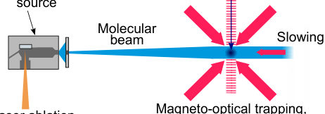
<figcaption class="paper-figure-caption"><b>Fig 1.</b> FIG. 1. Schematic of the proposed experimental apparatus to measure nuclear-spin-dependent parity violation. The ap- paratus implements the toolbox developed in Secs. III–VI. Molecules are created by laser ablation in a cryogenic buffer- gas source. The resulting molecular beam is slowed and subse- quently captured in a magneto-optical trap (MOT), with pink arrows indicating the corresponding laser beams. From there, the molecules are optically pumped into a suitable science state, loaded into a movable optical lattice, and transported into the interaction region. Here, a stable magnet Zeeman- tunes the opposite-parity science states ψ± to near degener- acy with a magnetic field B,...</figcaption>
</figure>
<figure class="paper-figure-card">
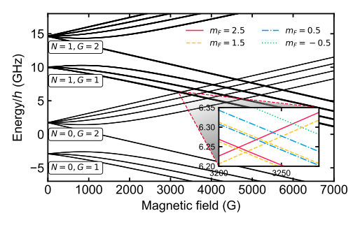
<figcaption class="paper-figure-caption"><b>Fig 2.</b> FIG. 2. Structure of 137BaF in a magnetic field. Levels be- longing to the N = 0 and N = 1 rotational states undergo crossings between 3000 and 6000 G. A total of 192 individ- ual crossings occur, which are organized in 16 clusters. As shown in the inset, each cluster contains 12 individual cross- ings, each associated with individual hyperfine levels mF . The representative science crossing examined in detail in this work is between the mF = 5/2 levels at approximately 3215 G, de- noted by the solid pink line in the inset. The remaining state labels are introduced in the main text.</figcaption>
</figure>
<figure class="paper-figure-card">
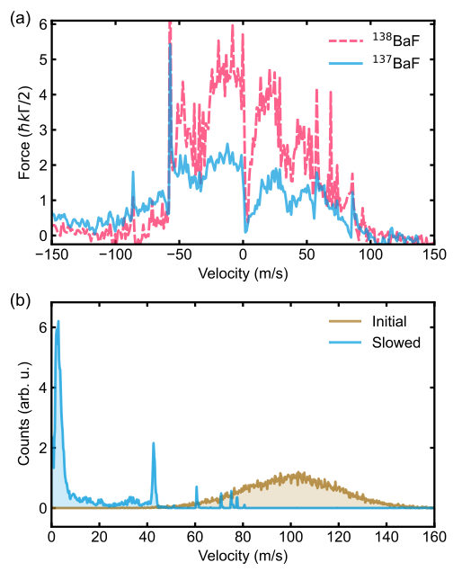
<figcaption class="paper-figure-caption"><b>Fig 3.</b> FIG. 3. Bichromatic forces as a tool for efficient slowing and velocity compression. (a) Simulated bichromatic forces in 137BaF (blue solid line) and 138BaF (pink dashed line) as a function of particle velocity for a bichromatic detuning of δBC = ±2π × 200 MHz, laser intensity IBC ≈26 W/cm2 per frequency component per direction, and bichromatic phase ϕBC = π/2. While the overall force magnitude is reduced in the odd isotopologue 137BaF, it still significantly exceeds the maximum scattering force ¯hkΓ/2 achievable in an equivalent idealized two-level system with linewidth Γ and wavelength λ = 2π/k over a wide range of velocities. In particular, it is orders of magnitude higher than...</figcaption>
</figure>
<figure class="paper-figure-card">
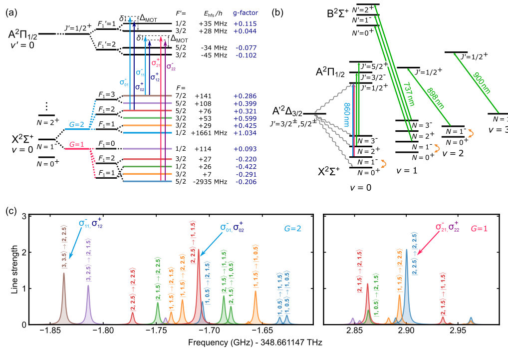
<figcaption class="paper-figure-caption"><b>Fig 4.</b> FIG. 4. Triple conveyor-belt MOT scheme for cooling and trapping of 137BaF. (a) Three pairs of oppositely circular polarized frequency components (handedness of polarization denoted by the superscript) address three dominant transitions with a global blue detuning ∆MOT and two-photon detuning δ between frequency components within each pair. For a total laser intensity, Itot, the intensity is split between [σ01, σ02, σ11, σ12, σ21, σ22] components as [0.2, 0.2, 0.15, 0.15, 0.15, 0.15] × Itot. The hyperfine energy shifts Ehfs relative to the respective rotational levels and the effective g-factors for the linear-Zeeman-effect regime are given for each hyperfine level F. (b) The realization of...</figcaption>
</figure>
<figure class="paper-figure-card">
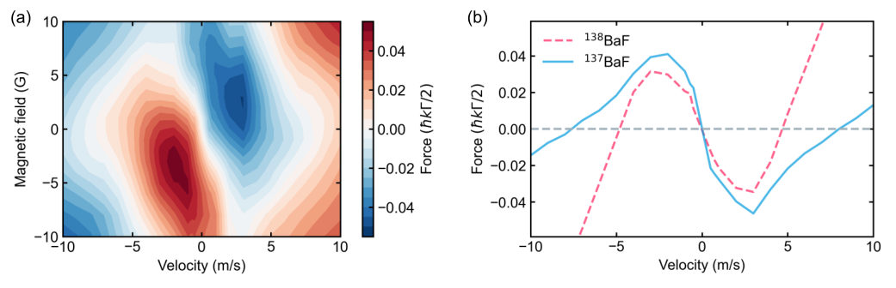
<figcaption class="paper-figure-caption"><b>Fig 5.</b> FIG. 5. Results of the MOT simulations using the triple conveyor-belt scheme proposed in Fig. 4. (a) We show the simulated radial force over varying on-axis particle velocity and magnetic-field strength in the three-dimensional conveyor-belt MOT of 137BaF. The simulation uses Itot = 0.4 W/cm2 per laser beam direction, single-photon detuning ∆MOT = +2π × 10 MHz, and two-photon detuning δ = 2π × 3 MHz. (b) Slice of the cooling force at the MOT center. Results for 137BaF (blue solid line) are compared with those for 138BaF (pink dashed line) simulated with the experimental parameters from the directly loaded MOT experiment in Ref. [51], with Itot = 0.2 W/cm2 per laser beam direction, in ratio...</figcaption>
</figure>
</div>

<p><strong>Summary.</strong> This paper introduces a general, high-precision experimental platform for searching for nuclear symmetry violations using laser-cooled molecules containing spinful nuclei. By leveraging techniques like Zeeman tuning near state crossings, the authors project sensitivities significantly beyond current limits. This work provides both the theoretical framework and the practical roadmap for next-generation searches for physics beyond the Standard Model in molecular systems.</p>
<p><strong>Why it may be interesting.</strong> This work represents a sophisticated integration of quantum optics (laser cooling/trapping) with fundamental physics searches. The detailed theoretical modeling of complex molecular Hamiltonians to predict optimal measurement points is highly relevant to advanced AMO research.</p>
<details>
<summary>Detailed structure</summary>
<p><strong>Main problem.</strong> The primary goal is searching for new physics by measuring nuclear P- and CP-violating effects, such as NSD-PV, in molecular systems.</p>
<p><strong>Main result.</strong> The authors propose a comprehensive experimental toolbox achieving projected sensitivities two orders of magnitude better than current molecular beam methods, applicable to various spinful molecules.</p>
<p><strong>Method.</strong> The method involves using external magnetic fields (Zeeman tuning) to bring opposite-parity molecular states into near-degeneracy, enhancing the measurement sensitivity via an interrogation technique like Stark-interferometry.</p>
<p><strong>Model / system.</strong> The system is laser-coolable diatomic molecules carrying spinful nuclei (e.g., ${}^{137}	ext{BaF}$). The theoretical framework involves detailed calculations of molecular Hamiltonians incorporating rotational, hyperfine, and Zeeman interactions in Hund's case ($\alphaeta S$).</p>
<p><strong>Key observables.</strong> The key observable is the mixing element $ar{W}$ (or matrix element $  ilde{C}$) derived from parity-violating couplings, measured via an asymmetry $A$ proportional to $1/\Delta$.</p>
<p><strong>Important parameters / regimes.</strong> Key parameters include the magnetic field strength ($B$), the energy detuning ($\Delta$), and molecular constants like the permanent electric dipole moment (e.g., 3.17 Debye for BaF).</p>
<p><strong>Assumptions / limitations.</strong> Major assumptions include neglecting contributions from weak electric fields in certain Hamiltonians and assuming that the dominant uncertainty source is the control over the energy detuning $\Delta$.</p>
<p><strong>Figures summary.</strong> Figure 1 schematically shows the entire experimental apparatus, from laser ablation to MOT capture. Figure 2 details the state structure of ${}^{137}	ext{BaF}$ in a magnetic field, illustrating relevant state crossings.</p>
<p><strong>Paper structure.</strong> The paper progresses by first establishing the general physical platform and required techniques (cooling, trapping). It then applies these methods to benchmark measurements like NSD-PV using specific molecular species (${}^{137}	ext{BaF}$), detailing Hamiltonian derivations and identifying precise magnetic field locations for maximal sensitivity.</p>
</details>
<details>
<summary>Abstract</summary>
<p>Cold heavy molecules are promising systems for exploring nuclear $\mathcal{P}$- and $\mathcal{CP}$-violating phenomena in search of new physics beyond the Standard Model. However, most proposed experimental strategies and their early realizations to date have been limited to proof-of-principle molecular species with effectively spin-zero nuclei that are not sensitive to nuclear symmetry-violating phenomena. Here, we introduce a comprehensive experimental toolbox that integrates cooling, trapping, coherent state manipulation, and a complete precision-measurement protocol that is applicable to molecules carrying relevant nuclear spins. Using ${}^{137}$Ba${}^{19}$F and nuclear-spin-dependent parity violation (NSD-PV) as representative species and benchmark application, respectively, our approach achieves a projected statistical sensitivity roughly two orders of magnitude beyond comparable molecular beams by combining techniques already demonstrated individually in current experiments. This level of precision could provide realistic experimental access not only to the enhanced NSD-PV signals arising from the heavy ${}^{137}$Ba nucleus within this molecule but also to the contributions from the lighter ${}^{19}$F nucleus, bringing direct benchmarks of nuclear \textit{ab initio} theory within reach. We further identify a candidate magic wavelength as a route to second-scale rotational coherence in future experiments. The techniques developed here can be transferred to measurements of nuclear Schiff and magnetic quadrupole moments in molecules containing deformed nuclei, establishing a general platform for laboratory searches for nuclear symmetry violations.</p>
</details>
<p><sub><a href="#top">↑ back to top</a></sub></p>

<p><a id="paper-2608.06169"></a></p>
<h3 id="dual-faraday-laser-pumped-cesium-beam-clock-with-math715math-frequency-stability"><a href="http://arxiv.org/abs/2608.06169v1">Dual-Faraday-laser-pumped cesium beam clock with $7.7\times 10^{-13}/\sqrtτ$ frequency stability</a></h3>
<p><strong>Authors:</strong> Xiaomin Qin, Suyang Wei, Haijun Chen, Yufei Yan, Qiang Wei, Hangbo Shi, Zhiyang Wang, Zheng Xiao, Zijie Liu, Tiantian Shi, Jingbiao Chen<br>
<strong>Type:</strong> experiment · <strong>Category:</strong> other · <strong>PDF:</strong> <a href="https://arxiv.org/pdf/2608.06169v1">https://arxiv.org/pdf/2608.06169v1</a><br>
<strong>Analysis basis:</strong> full PDF text, analyzed in chunks
<strong>Topic relevance:</strong> <code>interference shaping light</code> <strong>1/5</strong> · <code>quantum measurements</code> <strong>1/5</strong> · <code>quantum optics experiment</code> <strong>1/5</strong> · <code>superradiant laser</code> <strong>1/5</strong></p>
<div class="figure-strip-hint">↔ Scroll figures horizontally</div>
<div class="paper-figures-scroll">
<figure class="paper-figure-card">
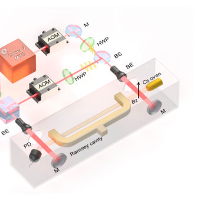
<figcaption class="paper-figure-caption"><b>Fig 1.</b> Fig. 1. (a) The 133Cs D2 energy-level structure and schematic diagram illustrating atom population distribution in the ground state 𝐹= 3 under single-Faraday-laser-pumping (SFP) and dual-Faraday-laser-pumping (DFP) scheme. (b) Experimental schematic of the compact DFP Cs clock. Laser 1 and Laser 2 are atom-referenced Faraday lasers stabilized via modulation transfer spectroscopy (MTS) to the 𝐹= 4 →𝐹′ = 5 and 𝐹= 3 →𝐹′ = 2 cycling transitions, respectively. The grey region represents the sealed cesium beam tube. The black arrow represents the direction of magnetic field produced by the Helmholtz coils. Pump 1 and Pump 2 polarizations are set to 𝜎and 𝜋, respectively, as indicated by the yellow...</figcaption>
</figure>
<figure class="paper-figure-card">
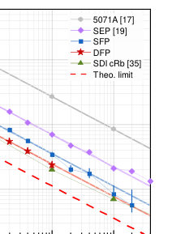
<figcaption class="paper-figure-caption"><b>Fig 2.</b> Fig. 4. (a) Summary of reported compact Cs clock frequency stabilities with differ- ent laser-pumping architectures, including single-laser-diode pumping (SLDP, green hexagons) [42–52], single-ECDL pumping (SEP, purple diamonds) [18,19,43], single- Faraday-laser-pumping (SFP, blue squares) [20], as well as the DFP (red stars) scheme demonstrated in this work. (b) The frequency stability of Cs beam clocks under different pumping schemes, theoretical stability calculated under DFP (red dotted line), the performance of commercial Cs beam clock 5071A [17] and commercial cold Rb atomic clock SDI cRb-clock [35].</figcaption>
</figure>
<figure class="paper-figure-card">
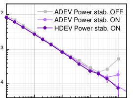
<figcaption class="paper-figure-caption"><b>Fig 3.</b> Fig. 5. (a)–(c) Linear-fit slopes of fractional frequency shift versus the probe, Pump 1 and Pump 2 power are −2.6 × 10−12/mW, −9.2 × 10−12/mW and −3.8 × 10−11/mW, respectively. (d) The relative power stability of Laser 1 measured before (grey squares) and after (purple circles) laser power stabilization. (e) The long-term frequency stability of DFP Cs beam clock evaluated from Allan deviation (ADEV) and Hadamard deviation (HDEV).</figcaption>
</figure>
</div>

<p><strong>Summary.</strong> The authors present a compact Dual-Faraday-laser-pumped (DFP) Cesium beam clock designed to achieve superior frequency stability for portable timing systems. By integrating advanced laser stabilization techniques like Modulation Transfer Spectroscopy with Faraday filtering, they successfully suppressed noise sources inherent in previous designs. This results in record short-term stability of $7.7	imes 10^{-13}/\sqrt{	au}$, advancing the state-of-the-art for field-deployable atomic clocks.</p>
<p><strong>Why it may be interesting.</strong> This work represents a significant engineering achievement in precision measurement using atomic physics principles. The successful suppression of laser noise to reach $10^{-13}/\sqrt{	au}$ stability is highly relevant for quantum sensing and metrology applications that require robust field operation.</p>
<details>
<summary>Detailed structure</summary>
<p><strong>Main problem.</strong> The primary goal is improving the short-term frequency stability of compact Cesium (Cs) beam clocks for use in field-deployable timing systems, overcoming limitations imposed by laser noise.</p>
<p><strong>Main result.</strong> The developed Dual-Faraday-laser-pumped (DFP) Cs clock achieved a fractional Allan deviation of $7.7	imes 10^{-13}/\sqrt{	au}$, pushing stability into the highly desirable $10^{-13}/\sqrt{	au}$ regime.</p>
<p><strong>Method.</strong> The technique involves using two lasers stabilized via Modulation Transfer Spectroscopy (MTS) and employing an intracavity Faraday anomalous dispersion optical filter (FADOF) for inherent resonance alignment.</p>
<p><strong>Model / system.</strong> The system is a compact Cs beam clock utilizing two distinct laser pumping transitions ($   ext{F}=4    o   ext{F}'=5$ and $    ext{F}=3    o   ext{F}'=2$). It relies on low-frequency-noise, atom-referenced lasers stabilized through complex optical feedback loops.</p>
<p><strong>Key observables.</strong> Clock SNR (46,365 in 1 Hz), fractional Allan deviation ($7.7	imes 10^{-13}/\sqrt{	au}$), and Hadamard deviation ($7.7	imes 10^{-15}$ at 10,000 s).</p>
<p><strong>Important parameters / regimes.</strong> Lorentzian linewidth of 2.12 kHz; stability improvement from $1.1 	imes 10^{-12}/\sqrt{	au}$ (SFP) to $7.7 	imes 10^{-13}/\sqrt{	au}$ (DFP).</p>
<p><strong>Assumptions / limitations.</strong> The primary limitation addressed is the conversion of laser frequency noise into fluorescence noise in standard two-laser pumping schemes.</p>
<p><strong>Figures summary.</strong> Figures illustrate the energy level diagrams for single vs. dual Faraday pumping, the experimental schematic of the DFP clock setup, and plots detailing stability measurements (ADEV/HDEV) versus averaging time ($   au$).</p>
<p><strong>Paper structure.</strong> The paper details the physical system components, describes the advanced stabilization techniques (MTS, FADOF), presents quantitative performance metrics comparing different pumping schemes, and concludes with future optimization paths.</p>
</details>
<details>
<summary>Abstract</summary>
<p>Compact cesium beam clocks are major frequency references for deployable timing systems. However, further improvement of their short-term frequency stability is limited by the clock signal-to-noise ratio (SNR). Although two-laser optical pumping can increase the effective atomic utilization, the achievable clock SNR has long been limited by laser-induced frequency-to-amplitude noise conversion. Here, we demonstrate a compact dual-Faraday-laser-pumped (DFP) Cs beam clock enabled by a low-frequency-noise atom-referenced laser architecture. The intracavity Faraday anomalous dispersion optical filter provides inherent alignment to the Cs D$_2$ resonances, while modulation transfer spectroscopy offers suppressed frequency noise and drift. The resulting laser system supports robust turnkey operation with a Lorentzian linewidth of 2.12 kHz. The DFP Cs clock achieves a clock SNR of 46,365 in a 1-Hz bandwidth and a fractional Allan deviation of $7.7\times 10^{-13}/\sqrtτ$ , with Hadamard deviation reaching $7.7\times 10^{-15}$ at 10,000 s. This work pushes the fractional frequency stability of a compact Cs beam clock into the $10^{-13}/\sqrtτ$ regime, providing a pathway toward high-performance Cs frequency references for field-deployable precision timing, navigation, and synchronization.</p>
</details>
<p><sub><a href="#top">↑ back to top</a></sub></p>

<p><a id="paper-2608.06239"></a></p>
<h3 id="fundamental-limits-of-parameter-estimation-with-heralded-optical-non-gaussian-states-generated-from-gaussian-resources"><a href="http://arxiv.org/abs/2608.06239v1">Fundamental limits of parameter estimation with heralded optical non-Gaussian states generated from Gaussian resources</a></h3>
<p><strong>Authors:</strong> Shohei Kiryu, Kazufumi Tanji, Yoshihiro Ueda, Kosuke Fukui, Masahiro Takeoka<br>
<strong>Type:</strong> theory · <strong>Category:</strong> quantum information and computing · <strong>PDF:</strong> <a href="https://arxiv.org/pdf/2608.06239v1">https://arxiv.org/pdf/2608.06239v1</a><br>
<strong>Analysis basis:</strong> full PDF text, analyzed in chunks
<strong>Topic relevance:</strong> <code>entanglement &amp; information structure</code> <strong>1/5</strong> · <code>interference shaping light</code> <strong>1/5</strong> · <code>quantum measurements</code> <strong>1/5</strong></p>
<div class="figure-strip-hint">↔ Scroll figures horizontally</div>
<div class="paper-figures-scroll">
<figure class="paper-figure-card">
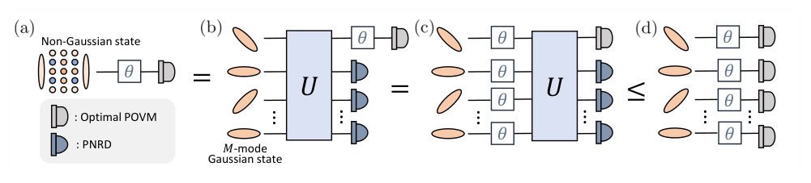
<figcaption class="paper-figure-caption"><b>Fig 1.</b> Figure 1: (a) Quantum sensing with a non-Gaussian state and (b) heralded non-Gaussian states. (c) Equivalent circuit with (b) with respect to the QFI. (d) Quantum sensing with Gaussian states. U is a linear optical unitary operation.</figcaption>
</figure>
<figure class="paper-figure-card">
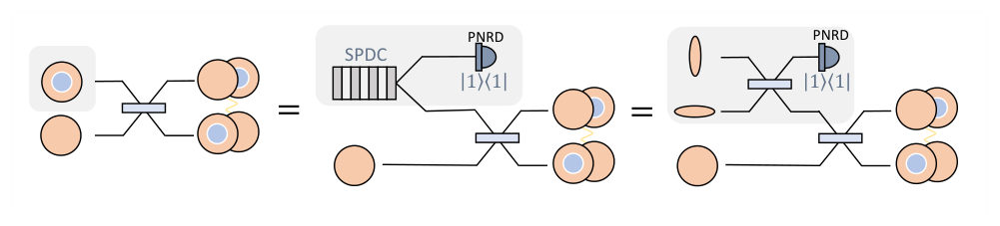
<figcaption class="paper-figure-caption"><b>Fig 2.</b> Figure 2: Optical setup to generate single-photon entangled states. The input single photons are heralded from two-mode squeezed vacuum states produced via spontaneous parametric down-conversion. The entire optical circuit can also be decomposed into an equivalent interferometric system. This system consists of two squeezed vacuum states and a half beam splitter.</figcaption>
</figure>
</div>

<p><strong>Summary.</strong> This theoretical paper analyzes the fundamental limits of phase estimation using heralded non-Gaussian states generated from Gaussian resources in optical systems. By defining an Effective Quantum Fisher Information (EQFI) that weights by success probability, the authors prove that this resource cannot surpass the QFI limit set by the original deterministic Gaussian input state. This highlights the critical importance of accounting for generation efficiency in quantum metrology.</p>
<p><strong>Why it may be interesting.</strong> This work provides a rigorous resource-counting benchmark for quantum sensing, showing that mere non-Gaussianity is insufficient for advantage if generation probabilities are ignored in linear optics settings.</p>
<details>
<summary>Detailed structure</summary>
<p><strong>Main problem.</strong> The paper investigates whether using heralded, probabilistic non-Gaussian quantum states offers a genuine metrological advantage over deterministic Gaussian states for single-parameter phase estimation.</p>
<p><strong>Main result.</strong> It is proven that the Effective Quantum Fisher Information (EQFI) of the heralded non-Gaussian states cannot exceed the Quantum Fisher Information (QFI) achievable with the original Gaussian input state, when resource cost (success probability) is accounted for.</p>
<p><strong>Method.</strong> The authors define and calculate the EQFI as a success-probability-weighted average of the conditional QFI over all possible detection outcomes from photon number resolving detectors.</p>
<p><strong>Model / system.</strong> The analysis uses passive linear optical circuits acting on Gaussian input states (like squeezed vacuum) to generate heralded non-Gaussian states, with phase estimation performed by applying a global phase rotation operator.</p>
<p><strong>Key observables.</strong> Quantum Fisher Information (QFI), Effective Quantum Fisher Information (EQFI), Success Probability ($P(n_B)$).</p>
<p><strong>Important parameters / regimes.</strong> The comparison is between $ ext{EQFI}$ and the input $  ext{QFI}$, particularly in regimes involving photon number conservation.</p>
<p><strong>Assumptions / limitations.</strong> The analysis assumes linear phase estimation using passive linear optics, and crucially incorporates the success probability of the heralding process into the performance metric.</p>
<p><strong>Figures summary.</strong> Figures illustrate quantum sensing schemes comparing non-Gaussian vs. Gaussian states, showing how the probabilistic nature (heralding) is mapped to an effective measurement strategy.</p>
<p><strong>Paper structure.</strong> The paper establishes a formal mapping between heralded state preparation and postselection after parameter encoding. It then derives the EQFI metric and proves the upper bound ($    ext{EQFI} \le   ext{QFI}_{  ext{input}}$), using commutation relations to justify this result.</p>
</details>
<details>
<summary>Abstract</summary>
<p>Non-Gaussian states can exhibit large quantum Fisher information (QFI) in quantum sensing. In optical systems, however, its generation is often probabilistic via the boson-sampling type conditional operation and thus its generation rate is limited. This probabilistic generation of non-Gaussian resource should be taken into account for evaluation of the sensing performance. Then a natural question arising is whether the use of heralded probabilistic non-Gaussian states is better than that of the original deterministic Gaussian states for quantum sensing. In this paper, we answer to this question for single-parameter phase-estimation. By using photon-number conservation in passive linear optical systems, we show that heralded state preparation before parameter encoding can be mapped to a postselection problem after parameter encoding for phase estimation. This mapping allows the success probability of heralding to be included naturally in the metrological performance. We introduce an effective quantum Fisher information (EQFI), defined as the success-probability-weighted QFI of the heralded outputs, and prove that it cannot exceed the QFI of the original Gaussian inputs. The result highlights the importance of resource counting in quantum sensing toward better understanding of the resource efficient advantage of optical quantum sensing.</p>
</details>
<p><sub><a href="#top">↑ back to top</a></sub></p>

<p><a id="paper-2608.06357"></a></p>
<h3 id="phonon-spectral-functions-of-low-density-polaron-metals"><a href="http://arxiv.org/abs/2608.06357v1">Phonon spectral functions of low-density polaron metals</a></h3>
<p><strong>Authors:</strong> Luis Walther, Alberto Nocera, Mona Berciu<br>
<strong>Type:</strong> theory · <strong>Category:</strong> strongly correlated electrons · <strong>PDF:</strong> <a href="https://arxiv.org/pdf/2608.06357v1">https://arxiv.org/pdf/2608.06357v1</a><br>
<strong>Analysis basis:</strong> full PDF text, analyzed in chunks
<strong>Topic relevance:</strong> <code>Frenkel-Kontorova</code> <strong>1/5</strong> · <code>Keldysh / 2PI / non-Gaussian methods</code> <strong>1/5</strong> · <code>methods for driven-dissipative</code> <strong>1/5</strong></p>
<div class="figure-strip-hint">↔ Scroll figures horizontally</div>
<div class="paper-figures-scroll">
<figure class="paper-figure-card">
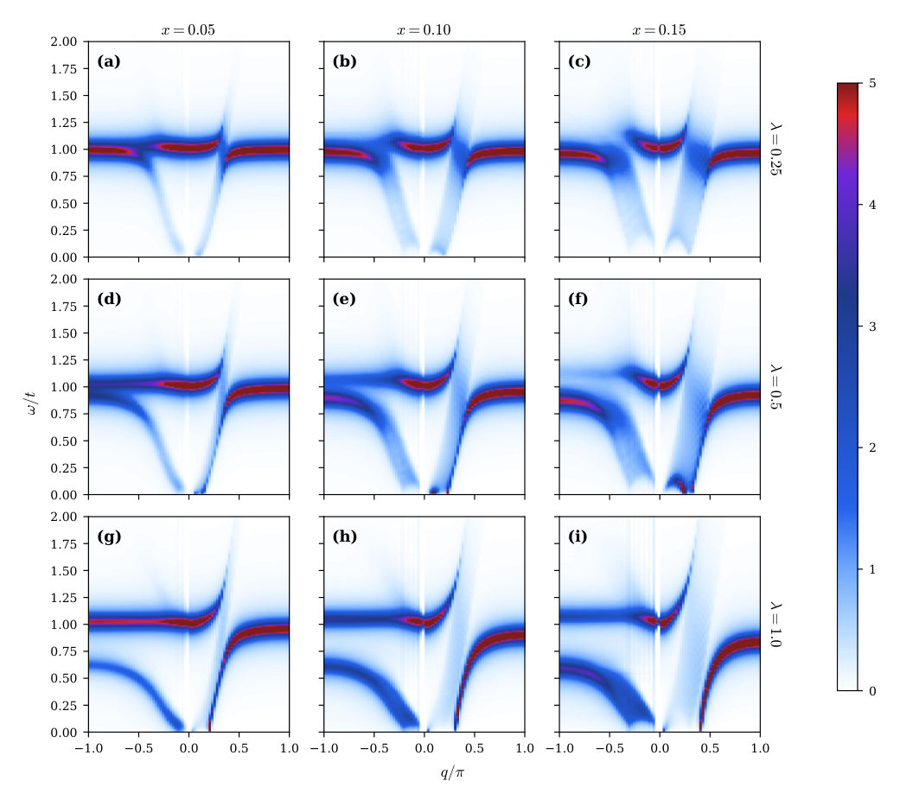
<figcaption class="paper-figure-caption"><b>Fig 1.</b> Figure 1. Phonon spectral function B(q, ω) for x = 0.05 (left column), x = 0.10 (middle column) and x = 0.15 (right column) at λ = 0.25 (top row), λ = 0.5 (middle row) and λ = 1 (bottom row). In each panel, the left half (q &lt; 0) shows the DMRG results while the right half (q &gt; 0) shows results obtained from RPA, i.e. keeping only the lowest order polarization loop of Eq. (11). In all cases t = 1, Ω= 1, η = 0.05.</figcaption>
</figure>
<figure class="paper-figure-card">
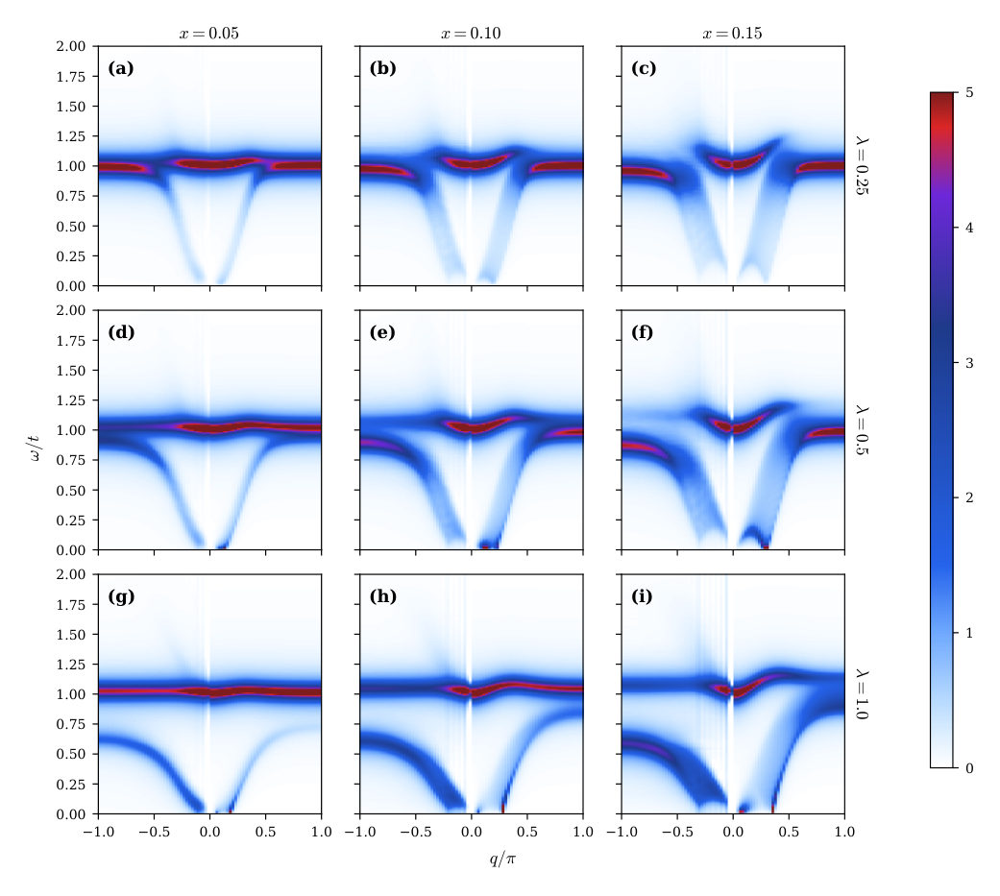
<figcaption class="paper-figure-caption"><b>Fig 2.</b> Figure 2. Phonon spectral function B(q, ω) for x = 0.05 (left column), x = 0.10 (middle column) and x = 0.15 (right column) at λ = 0.25 (top row), λ = 0.5 (middle row) and λ = 1 (bottom row). In each panel, the left half (q &lt; 0) shows the DMRG results while the right half (q &gt; 0) shows results obtained from dressed RPA of Eq. (15), see text for more details. In all cases t = 1, Ω= 1, η = 0.05.</figcaption>
</figure>
<figure class="paper-figure-card">
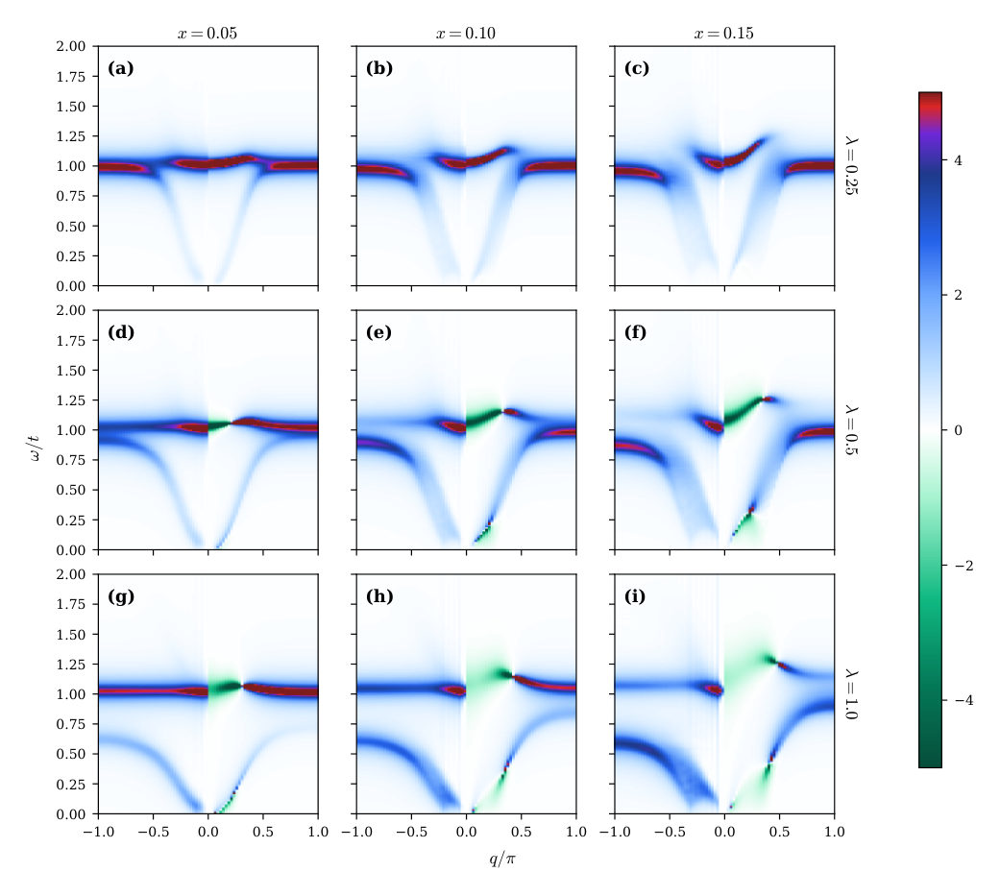
<figcaption class="paper-figure-caption"><b>Fig 3.</b> Figure 3. Phonon spectral function B(q, ω) for x = 0.05 (left column), x = 0.10 (middle column) and x = 0.15 (right column) at λ = 0.25 (top row), λ = 0.5 (middle row) and λ = 1 (bottom row). In each panel, the left half (q &lt; 0) shows the DMRG results while the right half (q &gt; 0) shows results obtained from the polarization that also includes the first vertex correction, see text for more details. In all cases t = 1, Ω= 1, η = 0.05.</figcaption>
</figure>
</div>

<p><strong>Summary.</strong> This work calculates the phonon spectral function for low-density polaron metals using DMRG. The results demonstrate that the spectral weight shifts significantly across energy scales, contradicting predictions based on the Migdal limit's $2k_F$ kink. The study proposes a 'dressed RPA' as an effective approximation while cautioning about the pitfalls of inconsistent diagrammatic expansions.</p>
<p><strong>Why it may be interesting.</strong> While focused on lattice models, the study of spectral weight renormalization due to coupling (electron-phonon interaction) is a core concept in understanding emergent collective excitations relevant to strongly correlated systems and superconductivity.</p>
<details>
<summary>Detailed structure</summary>
<p><strong>Main problem.</strong> The study aims to compute the phonon spectral function of low-density polaron metals, contrasting these results with predictions from established theoretical limits like the Migdal limit.</p>
<p><strong>Main result.</strong> The calculated spectra show significant phonon weight transfer both below and above the bare phonon energy, crucially lacking the $2k_F$ kink signature expected in standard Kohn anomaly phenomenology.</p>
<p><strong>Method.</strong> The primary calculation uses Density Matrix Renormalization Group (DMRG), supplemented by theoretical comparisons using the Random Phase Approximation (RPA) and a 'dressed RPA' scheme.</p>
<p><strong>Model / system.</strong> The system modeled is a one-dimensional spinless Holstein model doped with a low but finite carrier concentration ($x \le 0.15$), describing polaron metals interacting via electron-phonon coupling ($\lambda$).</p>
<p><strong>Key observables.</strong> Phonon spectral function, $B(q, \omega) = -rac{1}{\pi} 	ext{Im} D_R(q, \omega)$.</p>
<p><strong>Important parameters / regimes.</strong> Low carrier concentration ($x \le 0.15$), electron-phonon coupling ($\lambda$), and the bare phonon energy ($\Omega$).</p>
<p><strong>Assumptions / limitations.</strong> The 'dressed RPA' is proposed as an efficient approximation, but including lowest-order vertex corrections leads to unphysical negative spectral weight, signaling necessary consistent non-perturbative treatment of dressings.</p>
<p><strong>Figures summary.</strong> Figures compare DMRG results (for $q<0$) against polarization calculations using RPA and dressed RPA variants (for $q>0$), illustrating the transfer of phonon weight across different energy regimes.</p>
<p><strong>Paper structure.</strong> The paper establishes the physical problem by comparing low-density polaron behavior to known limits. It presents DMRG results, contrasts them with lowest-order RPA predictions, develops an improved 'dressed RPA' scheme, and concludes by discussing the limitations imposed by vertex corrections.</p>
</details>
<details>
<summary>Abstract</summary>
<p>We use the density matrix renormalization group (DMRG) to compute the phonon spectral function of a one-dimensional spinless Holstein model doped with a low but finite carrier concentration, $x \leq 0.15$, as a function of the electron-phonon coupling $λ$. To the best of our knowledge, these are the first such results in this regime, complementing extensive prior work at the single-polaron level ($x\to 0$). We find that significant phonon spectral weight is transferred both below, all the way down to $ω=0$, and above the bare phonon energy $Ω$, in stark contrast with the Kohn-anomaly phenomenology expected in the Migdal limit, where weight remains centered near $Ω$ with a kink at $q=2k_F$. No signature of this $2k_F$ kink appears in our results. This behavior is captured qualitatively by the Random Phase Approximation (RPA), and semi-quantitatively, at negligible extra computational cost, by a ``dressed RPA'' scheme in which the electron addition propagator is renormalized using the Momentum Average (MA) approximation for the low-density electron-polaron. By contrast, adding the lowest-order vertex correction to this dressed scheme produces unphysical negative spectral weight, signaling that vertex and propagator dressings must be treated consistently once the propagators are dressed nonperturbatively. Our results provide an efficient approximation for the phonon spectral functions of low-density polaron metals, a regime relevant to weakly doped insulators.</p>
</details>
<p><sub><a href="#top">↑ back to top</a></sub></p>

<p><a id="paper-2608.05354"></a></p>
<h3 id="superfluid-helium"><a href="http://arxiv.org/abs/2608.05354v1">Superfluid helium</a></h3>
<p><strong>Authors:</strong> Charles Radin<br>
<strong>Type:</strong> theory · <strong>Category:</strong> statistical mechanics · <strong>PDF:</strong> <a href="https://arxiv.org/pdf/2608.05354v1">https://arxiv.org/pdf/2608.05354v1</a><br>
<strong>Analysis basis:</strong> full PDF text, analyzed in chunks
<strong>Topic relevance:</strong> <code>Keldysh / 2PI / non-Gaussian methods</code> <strong>1/5</strong> · <code>driven-dissipative phase transition</code> <strong>1/5</strong> · <code>entanglement &amp; information structure</code> <strong>1/5</strong></p>
<div class="figure-strip-hint">↔ Scroll figures horizontally</div>
<div class="paper-figures-scroll">
<figure class="paper-figure-card">
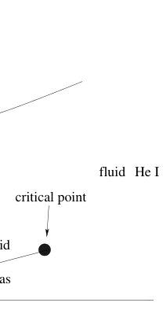
<figcaption class="paper-figure-caption"><b>Fig 1.</b> Figure 1. Highly simplified Pressure-Temperature phase diagram of 4He, showing the normal fluid (He I), the superfluid (He II), and the critical point within the fluid He I.</figcaption>
</figure>
<figure class="paper-figure-card">
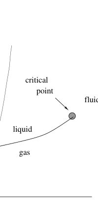
<figcaption class="paper-figure-caption"><b>Fig 2.</b> Figure 2. Highly simplified Pressure-Temperature phase diagram of carbon dioxide, emphasizing gas-liquid coexistence between the triple point and criti- cal point. It also shows the solid/fluid transition, the other curve going through the triple point.</figcaption>
</figure>
<figure class="paper-figure-card">
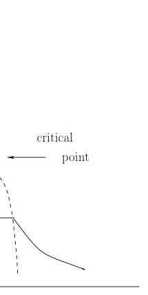
<figcaption class="paper-figure-caption"><b>Fig 3.</b> Figure 3. One isotherm (dark curve) of the highly simplified Pressure- Volume-Temperature equation of state of carbon dioxide, the range of co- existence indicated by the dashed curve.</figcaption>
</figure>
<figure class="paper-figure-card">
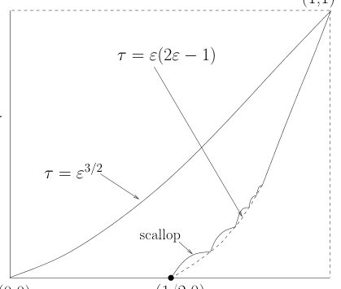
<figcaption class="paper-figure-caption"><b>Fig 4.</b> Figure 4. Razborov triangle, showing the possible values of edge and triangle densities.</figcaption>
</figure>
<figure class="paper-figure-card">
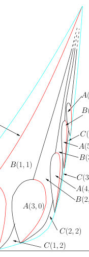
<figcaption class="paper-figure-caption"><b>Fig 5.</b> Figure 5. Conjectured phases (2017) in the edge/triangle model</figcaption>
</figure>
</div>

<p><strong>Summary.</strong> This theoretical paper models the liquid-superfluid phase transition in helium using an abstract toy model based on dense random graphs. By employing the mathematical formalism of graphons in the infinite system limit, the authors demonstrate how a difference in symmetry can naturally define an order parameter distinguishing the two distinct phases.</p>
<p><strong>Why it may be interesting.</strong> While focused on classical statistical mechanics, the use of advanced tools like graphons and infinite system limits to define symmetry-breaking order parameters is mathematically sophisticated and relevant to understanding emergent order in complex many-body systems.</p>
<details>
<summary>Detailed structure</summary>
<p><strong>Main problem.</strong> The primary goal is modeling the phase transition between normal liquid ($    ext{He I}$) and superfluid ($    ext{He II}$) helium-4, focusing on developing a theoretical framework to identify an order parameter.</p>
<p><strong>Main result.</strong> The authors propose using graph theory in the infinite system limit to show how symmetry differences can define an order parameter distinguishing the two distinct phases.</p>
<p><strong>Method.</strong> The analysis relies heavily on constructing and analyzing 'toy models' based on dense random graphs, utilizing the mathematical formalism of graphons derived from Lovász et al. [42].</p>
<p><strong>Model / system.</strong> The system is superfluid helium-4 ($    ext{He}$), modeled abstractly using an edge/triangle graph model defined on $n$ vertices. The analysis maps this to constraints on edge density ($\epsilon$) and triangle density ($   au$).</p>
<p><strong>Key observables.</strong> Order parameter, entropy (in the infinite system limit), thermal conductivity, and viscosity.</p>
<p><strong>Important parameters / regimes.</strong> Edge density ($\epsilon$), triangle density ($ au$), and the transition point between $    ext{He I}$ and $    ext{He II}$.</p>
<p><strong>Assumptions / limitations.</strong> The model is a 'toy model' whose formalism (infinite system limits) is not guaranteed to apply to all physical transitions, especially the fluid/solid one.</p>
<p><strong>Figures summary.</strong> Figures illustrate simplified P-T phase diagrams for ${}^4	ext{He}$ and $ ext{CO}_2$, and later show the structure of possible phases in the edge/triangle model (e.g., regions A(2,0), B(1,1), F(1,1)) represented by graphons.</p>
<p><strong>Paper structure.</strong> The paper progresses from establishing the physical problem ($ ext{He I}/  ext{He II}$ transition) to introducing a mathematical analogy using random graphs and their infinite limits (graphons). It then uses this framework to derive structural differences that serve as order parameters for the superfluid phase.</p>
</details>
<details>
<summary>Abstract</summary>
<p>We are interested in modelling superfluid helium-4, the common isotope of helium, of atomic number 4. We present a mathematically solvable toy model of the phase transition between the normal liquid and superfluid phases and use it to show how an order parameter might be obtained for the superfluid.</p>
</details>
<p><sub><a href="#top">↑ back to top</a></sub></p>

<p><a id="paper-2608.05314"></a></p>
<h3 id="machine-learning-for-sample-based-quantum-diagonalization-generative-configuration-recovery-and-the-classical-simulability-frontier"><a href="http://arxiv.org/abs/2608.05314v1">Machine learning for sample-based quantum diagonalization: generative configuration recovery and the classical-simulability frontier</a></h3>
<p><strong>Authors:</strong> Nicolás Bonilla Vargas<br>
<strong>Type:</strong> theory · <strong>Category:</strong> strongly correlated electrons · <strong>PDF:</strong> <a href="https://arxiv.org/pdf/2608.05314v1">https://arxiv.org/pdf/2608.05314v1</a><br>
<strong>Analysis basis:</strong> full PDF text, analyzed in chunks
<strong>Topic relevance:</strong> <code>analog quantum simulation</code> <strong>1/5</strong> · <code>correlated cavity matter</code> <strong>1/5</strong></p>
<div class="figure-strip-hint">↔ Scroll figures horizontally</div>
<div class="paper-figures-scroll">
<figure class="paper-figure-card">
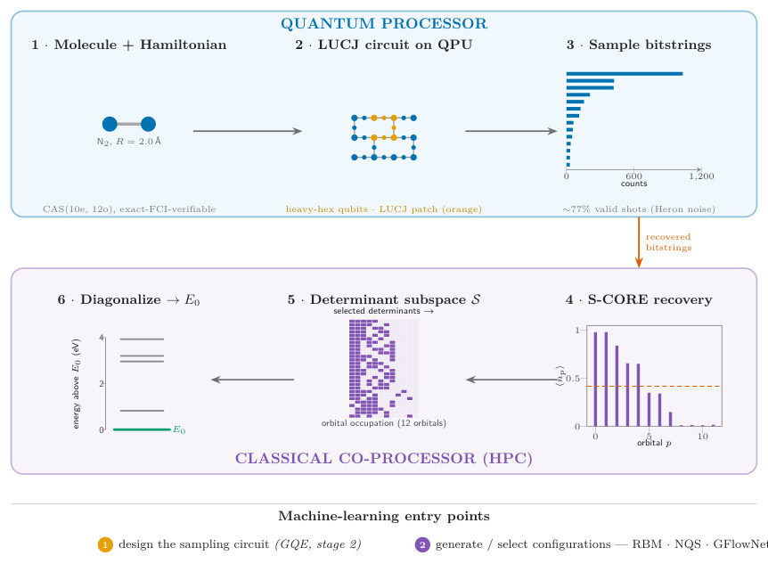
<figcaption class="paper-figure-caption"><b>Fig 1.</b> Figure 1. The sample-based quantum diagonalization workflow, with real data at every stage (N2, CAS(10e,12o), exact-FCI-verifiable). A shallow LUCJ circuit on the quantum processor (orbital rotations U(θ) interleaved with diagonal-Coulomb Jastrow gates) is sampled in the computational basis; here 77% of shots survive particle-number post-selection at Heron-calibrated noise. The classical co-processor repairs the broken samples by occupation-weighted S-CORE, assembles the recovered determinants into a subspace S (each row of panel 5 is one selected configuration’s orbital occupation), and diagonalizes the projected Hamiltonian, whose energy is a variational upper bound converging to the...</figcaption>
</figure>
<figure class="paper-figure-card">
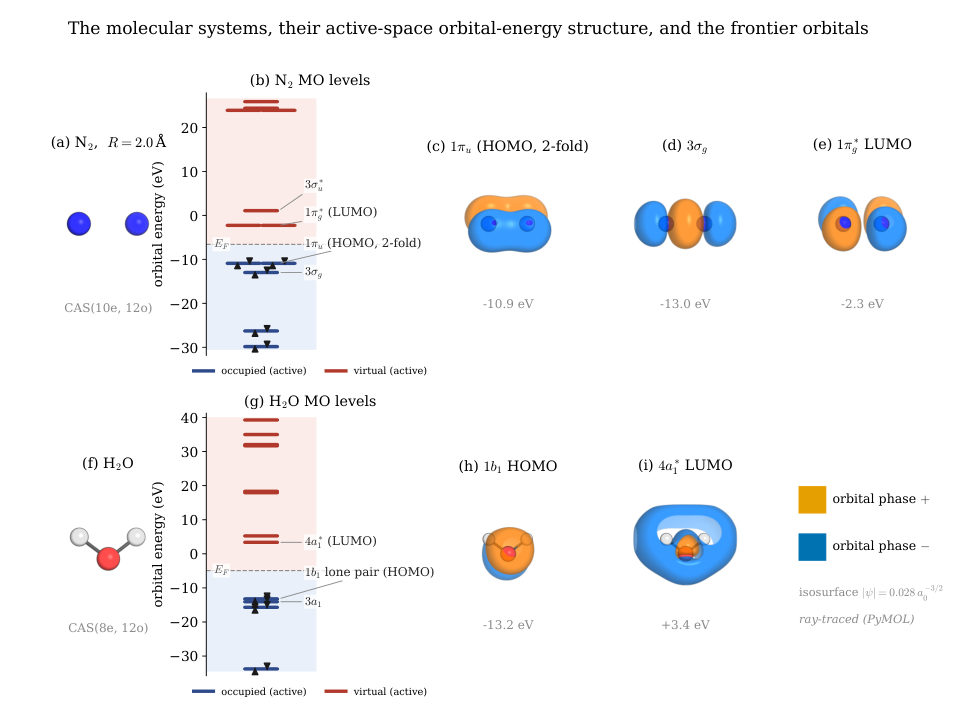
<figcaption class="paper-figure-caption"><b>Fig 2.</b> Figure 2. The molecular systems, their active-space orbital-energy structure, and the frontier orbitals. (a,f) Ray-traced ball-and-stick geometries of stretched N2 (R = 2.0 Å, CAS(10e,12o)) and H2O (CAS(8e,12o)). (b,g) Molecular-orbital energy-level diagrams (restricted Hartree–Fock, eV): occupied active levels (blue) carry their two electrons as up/down arrows, virtual active levels are red, the shaded band is the complete active space, and EF marks the HOMO–LUMO midpoint; the deep 1s core is frozen and off-scale. (c–e) Ray-traced (PyMOL) isosurfaces of the N2 frontier orbitals — the two-fold-degenerate 1πu HOMO (−10.9 eV; note the axis-containing nodal plane of π symmetry), the...</figcaption>
</figure>
<figure class="paper-figure-card">
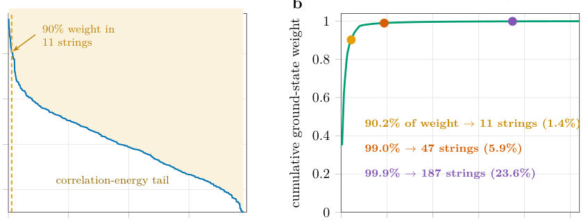
<figcaption class="paper-figure-caption"><b>Fig 3.</b> Figure 3. The coupon-collector bottleneck, computed exactly. N2 CAS(10e,12o), from the exact FCI wavefunction. Left: the marginal single-spin-string weight wα(i) = P</figcaption>
</figure>
<figure class="paper-figure-card">
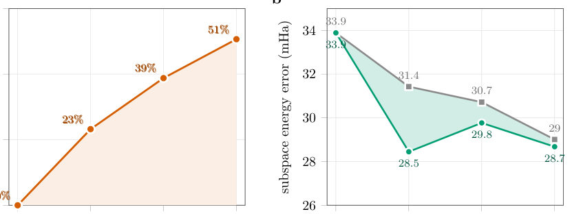
<figcaption class="paper-figure-caption"><b>Fig 4.</b> Figure 4. Configuration recovery under backend-calibrated noise (FakeTorino / Heron r1 rates; asymmetric readout + depolarizing). Left: the fraction of particle-number-valid shots collapses as the noise scale grows. Right: at fixed dimension D = 120, S-CORE recovery (green) lowers the subspace energy error relative to discarding the invalid shots (grey) — most at moderate noise (∼3 mHa at 1×, shrinking to ∼0.3 mHa at 3×) — while the raw curve (grey) drifts steadily downward and the recovered curve (green) drops sharply then stays low as noise broadens Hilbert-space exploration, both consistent with the “noise can help” effect. Note the recovered subspace stays well above chemical accuracy...</figcaption>
</figure>
<figure class="paper-figure-card">
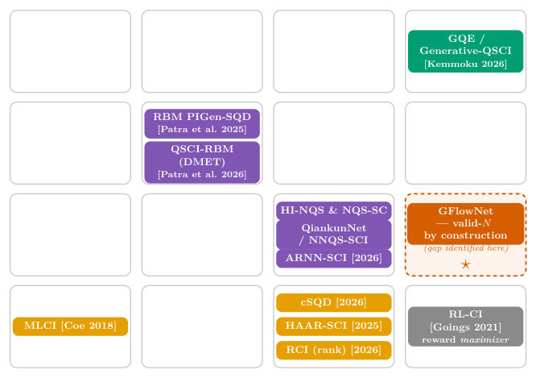
<figcaption class="paper-figure-caption"><b>Fig 5.</b> Figure 5. A taxonomy of machine-learning methods for determinant and subspace selection in SQD, organized by the object each method generates (rows) and the importance signal it exploits (columns). Generative models (purple) learn a distribution over determinants; discriminative models (orange) classify or rank them; circuit-design methods (green) learn the sampler itself. The reward-driven column (right) is occupied only by the reinforcement-learning maximizer RL-CI [Goings 2021] (grey); the reward-proportional flow cell (dashed) that diverse tail discovery calls for is the methodological whitespace this review identifies — a generative-flow network that constructs valid-N determinants in...</figcaption>
</figure>
</div>

<p><strong>Summary.</strong> This paper critically reviews Sample-based Quantum Diagonalization (SQD) for electronic structure, arguing that current implementations do not demonstrate a clear quantum advantage over state-of-the-art classical selected configuration interaction methods. It establishes rigorous benchmarking standards and suggests that true quantum utility may only be found in specific regimes, such as robustness to noise or learning from quantum experiments.</p>
<p><strong>Why it may be interesting.</strong> It directly addresses the computational bottleneck in strongly correlated electron physics by evaluating the practical utility and theoretical limits of hybrid quantum-classical algorithms like SQD against established methods (like DMRG or advanced CI).</p>
<details>
<summary>Detailed structure</summary>
<p><strong>Main problem.</strong> The central problem is accurately determining the ground-state energy of a many-electron Hamiltonian, which is computationally intractable due to the exponential growth of the full configuration interaction (FCI) space.</p>
<p><strong>Main result.</strong> The authors report that strong classical selected CI methods match or beat quantum-sampled subspaces in published comparisons, and they establish a regime map defining where a true quantum advantage might exist.</p>
<p><strong>Method.</strong> The paper critically reviews Sample-based Quantum Diagonalization (SQD) and proposes rigorous benchmarking standards to test the limits of quantum sampling versus established classical correlated electron techniques.</p>
<p><strong>Model / system.</strong> The focus is on many-electron systems governed by the electronic Hamiltonian, typically studied in chemistry using active spaces defined by orbital occupations. The methods compare QSCI/SQD against classical sCI approaches.</p>
<p><strong>Key observables.</strong> Ground-state energy ($E_0$), determinant importance distribution, and configuration count required for a given accuracy.</p>
<p><strong>Important parameters / regimes.</strong> The multireference character of the electronic state is highlighted as a potential coordinate distinguishing quantum advantage regimes.</p>
<p><strong>Assumptions / limitations.</strong> The primary assumption being tested is whether the sampling process inherent in SQD can overcome the combinatorial explosion better than classical selection heuristics, which is shown to be false under current comparisons.</p>
<p><strong>Figures summary.</strong> Not specified (The notes describe the workflow and results rather than specific figure contents).</p>
<p><strong>Paper structure.</strong> The paper critically reviews the existing ecosystem of ML-enhanced quantum samplers, confronts the central question of quantum vs. classical performance using negative results, proposes a benchmarking standard/regime map, and tests this map with FCI-exact experiments.</p>
</details>
<details>
<summary>Abstract</summary>
<p>Sample-based quantum diagonalization (SQD), equivalently quantum-selected configuration interaction (QSCI), has in two years become a pragmatic centre of gravity of pre-fault-tolerant quantum chemistry: a quantum processor samples electronic configurations, and the many-electron Hamiltonian is diagonalized classically in the resulting determinant subspace. Its accuracy is set entirely by which configurations enter that subspace, a selection problem for machine learning made acute by a coupon-collector bottleneck. We critically review the ecosystem of generative and learned selectors, organizing it by the object each method generates and the importance signal it exploits, and expose one conspicuous gap: a reward-proportional generative-flow-network proposer built for tail discovery. We then confront the field's central question -- whether the quantum sampler beats classical selected configuration interaction -- and report a carefully scoped negative: across published same-active-space comparisons, strong classical selected CI matches or beats the quantum-sampled subspace, and the flagship single-layer circuits now admit polynomial-time classical energy estimation. We distil a benchmarking standard and turn the negative into a regime map, then test it with FCI-exact experiments that confirm one prediction and refute another: the cheap prior's rank correlation with the exact weights declines with multireference character (a usable coordinate), but a controlled single-molecule noise sweep shows the one generative advantage we find, robustness to valid-shot starvation, to be generic rather than the multireference-specific effect a confounded contrast first suggested. Finally, we flag learning from quantum experiments, whose classical sample-complexity lower bound is an unconditional theorem, as the one adjacent frontier where a quantum advantage is provable but not yet bridged to chemistry.</p>
</details>
<p><sub><a href="#top">↑ back to top</a></sub></p>

<p><a id="paper-2608.06047"></a></p>
<h3 id="partition-functions-of-hermitian-and-pt-symmetric-oscillators-from-integrable-models"><a href="http://arxiv.org/abs/2608.06047v1">Partition Functions of Hermitian and PT-Symmetric Oscillators from Integrable Models</a></h3>
<p><strong>Authors:</strong> Hongfei Shu, Jingjing Yang<br>
<strong>Type:</strong> theory · <strong>Category:</strong> statistical mechanics · <strong>PDF:</strong> <a href="https://arxiv.org/pdf/2608.06047v1">https://arxiv.org/pdf/2608.06047v1</a><br>
<strong>Analysis basis:</strong> full PDF text, analyzed in chunks
<strong>Topic relevance:</strong> <code>Keldysh / 2PI / non-Gaussian methods</code> <strong>1/5</strong> · <code>driven-dissipative phase transition</code> <strong>1/5</strong></p>
<div class="figure-strip-hint">↔ Scroll figures horizontally</div>
<div class="paper-figures-scroll">
<figure class="paper-figure-card">
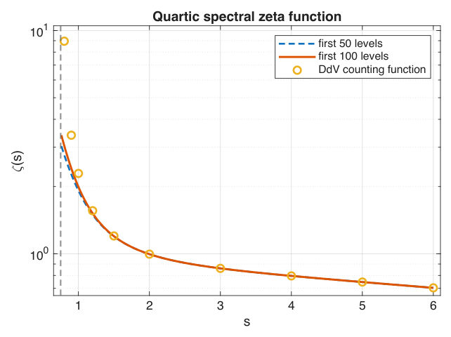
<figcaption class="paper-figure-caption"><b>Fig 1.</b> Figure 1: Quartic spectral zeta function from the DdV counting function compared with partial sums</figcaption>
</figure>
</div>

<p><strong>Summary.</strong> This paper develops a novel theoretical framework to calculate the partition function and spectral zeta function for anharmonic oscillators, including both standard Hermitian and PT-symmetric cases. It achieves this by establishing a direct link between these quantum spectral functions and solutions derived from integrable models via contour integration techniques. This provides powerful analytical tools for studying thermal properties in complex quantum systems.</p>
<p><strong>Why it may be interesting.</strong> The rigorous connection established between spectral properties (thermodynamics) and the mathematical structure of integrable systems provides powerful new tools for calculating quantum observables in complex potentials.</p>
<details>
<summary>Detailed structure</summary>
<p><strong>Main problem.</strong> The primary goal is developing a direct mathematical bridge connecting quantum spectral functions (like partition functions and spectral zeta functions) to solutions derived from integrable models.</p>
<p><strong>Main result.</strong> The authors successfully express the thermal partition function and spectral zeta function for both Hermitian and PT-symmetric oscillators using contour integrals involving the counting function derived from the integrable model's equations.</p>
<p><strong>Method.</strong> The methodology relies on the ODE/IM correspondence, utilizing the Destri–de Vega equation to find the quantization condition $a(E)$, which then parameterizes the required contour integrals for thermodynamic quantities.</p>
<p><strong>Model / system.</strong> The study analyzes homogeneous anharmonic oscillators, specifically Hermitian ($V(x) = x^{2M}$) and PT-symmetric potentials. The analysis extends these techniques to calculate thermal properties across different symmetry classes.</p>
<p><strong>Key observables.</strong> Partition function $Z(eta)$, Spectral zeta function $\zeta_H(s)$ (and $\zeta_{PT}^H(s)$), Ground state energy ($E_0$).</p>
<p><strong>Important parameters / regimes.</strong> Inverse temperature ($eta$), Oscillator exponent ($M > 1$), and the spectral parameter $s$.</p>
<p><strong>Assumptions / limitations.</strong> The analysis assumes the applicability of the ODE/IM correspondence and relies on asymptotic expansions (WKB) for high-temperature regimes.</p>
<p><strong>Figures summary.</strong> Tables compare calculated values of the ground state energy ($E_0$) and spectral zeta function ($\zeta(s)$) against established literature results, demonstrating consistency across different methods.</p>
<p><strong>Paper structure.</strong> The paper develops the formulation for Hermitian oscillators first, deriving contour integral representations for $Z(eta)$. It then extends this framework to PT-symmetric systems, requiring careful selection of Stokes sectors and yielding analogous integral forms for $Z_{PT}(eta)$ and $\zeta_{PT}^H(s)$.</p>
</details>
<details>
<summary>Abstract</summary>
<p>We develop an ODE/IM-based formulation for the thermal partition function and the spectral zeta function of the homogeneous Hermitian and PT-symmetric oscillators. For both classes of systems, the quantization condition can be expressed using the counting function $a(E)$, which can be solved via the Destri-de Vega equation of the integrable model. We then express the partition function and spectral zeta function as contour integrals involving the counting function, thereby providing a direct bridge between quantum spectral functions and integrable models.</p>
</details>
<p><sub><a href="#top">↑ back to top</a></sub></p>

<p><a id="paper-2608.05307"></a></p>
<h3 id="quantum-channel-learning-with-limited-parallel-access"><a href="http://arxiv.org/abs/2608.05307v1">Quantum channel learning with limited parallel access</a></h3>
<p><strong>Authors:</strong> Mahadevan Subramanian, Hyukgun Kwon, Liang Jiang<br>
<strong>Type:</strong> theory · <strong>Category:</strong> quantum information and computing · <strong>PDF:</strong> <a href="https://arxiv.org/pdf/2608.05307v1">https://arxiv.org/pdf/2608.05307v1</a><br>
<strong>Analysis basis:</strong> full PDF text, analyzed in chunks
<strong>Topic relevance:</strong> <code>entanglement &amp; information structure</code> <strong>1/5</strong> · <code>quantum measurements</code> <strong>1/5</strong></p>
<div class="figure-strip-hint">↔ Scroll figures horizontally</div>
<div class="paper-figures-scroll">
<figure class="paper-figure-card">
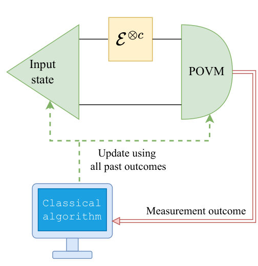
<figcaption class="paper-figure-caption"><b>Fig 1.</b> FIG. 1: Representation of a learning protocol that uses c-copies of an unknown channel E which is probed by an input state and then measured with the assistance of ancillas. It is assumed that there are multiple steps of such a protocol where the measurement outcomes of all past steps are then used to update the input state and POVM for the next round. The processing is naturally done by a classical algorithm and since we are interested in the fundamental of sample complexity of channel usage, we assume unbounded classical memory and accurate control of the input states and POVMs. To study the case of complex-conjugate channels we can alternatively substitute (E ⊗E∗)⊗c in place of the...</figcaption>
</figure>
<figure class="paper-figure-card">
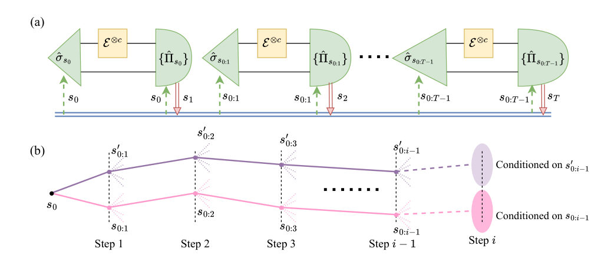
<figcaption class="paper-figure-caption"><b>Fig 2.</b> FIG. 2: (a) Depiction of c-copy protocols as defined in Def. III.1. Each learning step allows for ancilla assistance and adaptive state preparation and measurements. Each measurement {ˆΠs0:t} is assumed to be an arbitrary POVM. The learning protocol is initialized with the classical memory with value s0 which is appended with each measurement outcome to finally get the vector s0:T at the end of the learning protocol. This classical information is then processed to construct an appropriate description of the channel. (b) An example of two paths s0:i and s′ 0:i of the measurement outcomes where it can be noted that outcome si (s′ i) is distributed as per a measure that is dependent on the...</figcaption>
</figure>
<figure class="paper-figure-card">
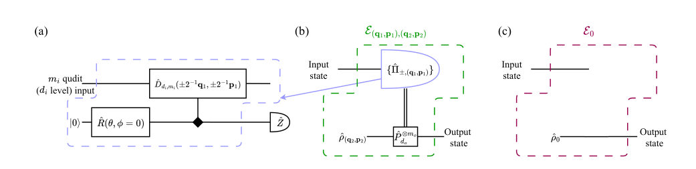
<figcaption class="paper-figure-caption"><b>Fig 3.</b> FIG. 3: (a) Circuit to implement the two-outcome POVM {ˆΠ±,(q1,p1)} in Eq. (32) where R(θ, ϕ) is a qubit rotation (we set θ = π/4 to obtain the exact POVM) and the controlled displacement operation performs ˆDd,m(±2−1q, 2−1p) conditioned on if the qubit is in the |+⟩or |−⟩state (eigenstates of Pauli ˆX) and the two POVM outcomes correspond to the two outcomes of the ˆZ basis measurement. (b) Construction for the parameterized channel E(q1,p1),(q2,p2) (Eq. (32)) for (q1, p1) ∈Fm d × Fm d \{0, 0} and (q2, p2) ∈Fm′ d′ × Fm′ d′ \{0, 0} realized using the described POVM where the readout classically controls a parity operation to prepare either ˆρ+,(q2,p2) or ˆρ−,(q2,p2). (c) The channel E0 is a...</figcaption>
</figure>
<figure class="paper-figure-card">
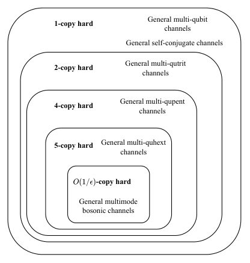
<figcaption class="paper-figure-caption"><b>Fig 4.</b> FIG. 4: Visual representation of learning hierarchy over the set of all channels with the same input and output Hilbert spaces. By “hard” we refer to sample complexity that scales exponentially in the system size (i.e. number of qudits or modes). We note that multi-qubit channels [23] and self-conjugate channels (Thm.s IV.4, IV.5) are 1-copy hard, but aren’t 2-copy hard. Similarly we have results for multi-qudit channels being d −1-copy hard, but not d-copy hard (Thm. IV.2) for any prime d which we depict for the cases of d = 3 and 5 in the above figure (namely qutrits, qupents). Further we discuss that d −1-copy hard that are not d-copy hard can be realized for square-free d so we depict...</figcaption>
</figure>
<figure class="paper-figure-card">
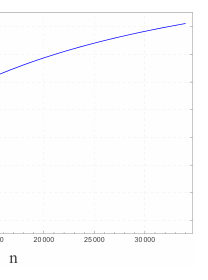
<figcaption class="paper-figure-caption"><b>Fig 5.</b> FIG. 5: Manual verification for lemma B.7 for the range 8 ≤n ≤34000.</figcaption>
</figure>
</div>

<p><strong>Summary.</strong> This theoretical work establishes fundamental limits on how much data (sample complexity) is needed to characterize an unknown quantum channel. By analyzing qudit and bosonic systems, the authors show that accessing both the channel $\mathcal{E}$ and its complex conjugate $\mathcal{E}^*$ simultaneously provides a significant advantage over simply having multiple copies of $\mathcal{E}$. This work defines a resource hierarchy for quantum process learning.</p>
<p><strong>Why it may be interesting.</strong> It provides rigorous resource quantification for quantum process tomography, showing that simply having multiple copies of a channel is insufficient without complementary information (like conjugate access) to achieve efficient learning scaling.</p>
<details>
<summary>Detailed structure</summary>
<p><strong>Main problem.</strong> The paper derives sample-complexity lower bounds for estimating entries of transfer matrices or functions that characterize unknown quantum channels under limited parallel access resources.</p>
<p><strong>Main result.</strong> Efficient learning requires specific resource access, such as simultaneous access to the channel and its complex conjugate ($\mathcal{E} \otimes \mathcal{E}^*$), establishing a hierarchy of required quantum information resources for characterization.</p>
<p><strong>Method.</strong> The analysis uses techniques from quantum estimation theory, deriving lower bounds by comparing the distinguishability of states/channels under different resource constraints (e.g., $c$-copy access vs. conjugate access).</p>
<p><strong>Model / system.</strong> The study considers quantum channels acting on qudit systems and multi-mode bosonic systems, characterizing them via Heisenberg–Weyl transfer matrices or characteristic-function transfer functions derived from the Choi state.</p>
<p><strong>Key observables.</strong> Transfer matrix/function entries, sample complexity bounds ($\epsilon^{-k}$ scaling), and distinguishability measures like the diamond distance.</p>
<p><strong>Important parameters / regimes.</strong> Accuracy $\epsilon$, success probability $1-\delta$, number of copies $c$, and local dimension $d$ (for qudits).</p>
<p><strong>Assumptions / limitations.</strong> The analysis assumes the learner has control over input states and ancillary assistance, allowing for strong lower bounds on required resources.</p>
<p><strong>Figures summary.</strong> Figure 1 illustrates a general learning protocol using c-copies of an unknown channel E. Table I summarizes lower bounds across different resource models (c copies vs. conjugate access).</p>
<p><strong>Paper structure.</strong> The paper progresses by first establishing the mathematical framework for characterizing channels on qudits and bosons, then deriving complexity bounds based on limited parallel access ($c$ copies), and finally comparing these bounds against optimal protocols using complex-conjugate access.</p>
</details>
<details>
<summary>Abstract</summary>
<p>Quantum channels can characterized by their action on an orthogonal operator basis, where these operators are related to observable properties of the quantum system. For qudit and multimode bosonic systems, this is encoded respectively in the Heisenberg--Weyl transfer matrix estimated from the Choi state, and in the characteristic-function transfer function estimated from the Choi state generated by probing with a two-mode squeezed vacuum state. We derive sample-complexity bounds for estimating entries of these transfer matrix/function to additive accuracy $ε$ with success probability $\geq1-δ$, under different resources: access to the complex-conjugate channel $\mathcal{E}^*$ and/or simultaneous access to $c$ copies of the channel. In all settings, the learner uses parallel channel calls with adaptively chosen, ancilla-assisted input states and measurements. Absolute values of transfer-matrix entries can be learned efficiently with simultaneous access to $\mathcal{E}$ and $\mathcal{E}^*$, with tight scaling $ε^{-4}$. Without conjugate access, any $c<d$ copies are insufficient for efficient learning, requiring sample complexity exponential in the number of ($d$-level) qudits $n$ (for prime $d$). Efficiency is recovered at $c=d$, with tight scaling $ε^{-2d}$. For bosonic systems, exponential sample complexity persists for all $c=O(1/ε)$. Although the task is learning a particular state, these bounds carry stronger implications than standard state-learning bounds since the learner controls the inputs and ancillary assistance. This establishes a hierarchy of channel-learning resources: self-complex-conjugate channels require two-copy ancilla-assisted access for efficient learning, while for every square-free $d$, some channels require $d$-copy access. As a corollary, we bounds tighter lower bounds for state learning with limited multi-copy access.</p>
</details>
<p><sub><a href="#top">↑ back to top</a></sub></p>

<p><a id="paper-2608.05845"></a></p>
<h3 id="computing-shear-viscosities-from-molecular-dynamics-simulation-comparing-the-orthoboxy-approach-with-the-green-kubo-method"><a href="http://arxiv.org/abs/2608.05845v1">Computing Shear Viscosities from Molecular Dynamics Simulation: Comparing the OrthoBoXY Approach with the Green-Kubo Method</a></h3>
<p><strong>Authors:</strong> Marcel Brandt, Ralf Ludwig, Dietmar Paschek<br>
<strong>Type:</strong> theory · <strong>Category:</strong> statistical mechanics · <strong>PDF:</strong> <a href="https://arxiv.org/pdf/2608.05845v1">https://arxiv.org/pdf/2608.05845v1</a><br>
<strong>Analysis basis:</strong> full PDF text, analyzed in chunks
<strong>Topic relevance:</strong> <code>non-equilibrium dynamics</code> <strong>1/5</strong></p>
<div class="figure-strip-hint">↔ Scroll figures horizontally</div>
<div class="paper-figures-scroll">
<figure class="paper-figure-card">
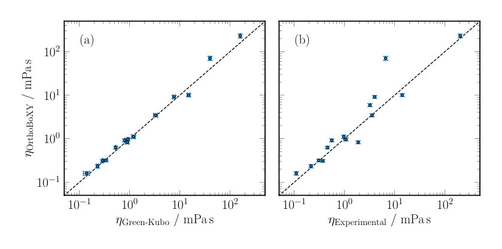
<figcaption class="paper-figure-caption"><b>Fig 1.</b> FIG. 1. Comparison of OrthoBoXY viscosities with (a) Green-Kubo viscosities and (b) experimental viscosities from literature. For details on the data, see Table II.</figcaption>
</figure>
<figure class="paper-figure-card">
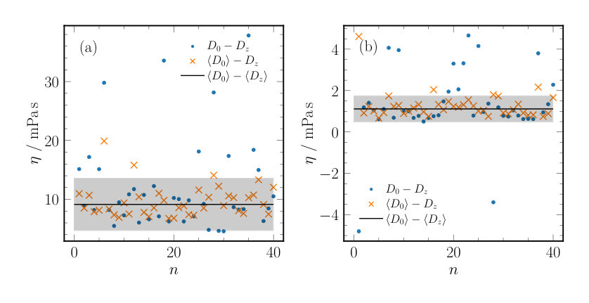
<figcaption class="paper-figure-caption"><b>Fig 2.</b> FIG. 2. Viscosities of (a) phenol and (b) pyridine for the nth simulation block calculated via variant A (blue circles), variant B (orange crosses) and variant C (black line). Note that variant C gives only one value and is displayed with its standard deviation (shaded region).</figcaption>
</figure>
<figure class="paper-figure-card">
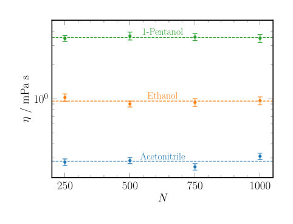
<figcaption class="paper-figure-caption"><b>Fig 3.</b> FIG. 3. Viscosities of acetonitrile (blue), ethanol (orange) and 1-pentanol (green) for system sizes of 250, 500, 750 and 1000 molecules. The dashed lines represent the averages.</figcaption>
</figure>
<figure class="paper-figure-card">
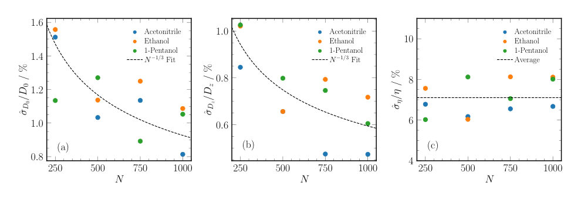
<figcaption class="paper-figure-caption"><b>Fig 4.</b> FIG. 4. Relative standard errors of (a) D0, (b) DPBC,zz and (c) η computed for varying system sizes. The data are shown as a function of the number of molecules N in the system.</figcaption>
</figure>
<figure class="paper-figure-card">
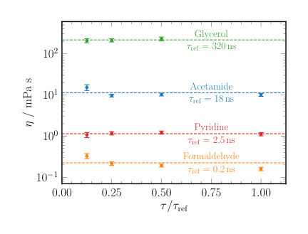
<figcaption class="paper-figure-caption"><b>Fig 5.</b> FIG. 5. Viscosities of acetamide (blue), formaldehyde (or- ange), glycerol (green) and pyridine (red) with simulation block lengths scaled by factors of 1, 1</figcaption>
</figure>
</div>

<p><strong>Summary.</strong> This work compares two methods for calculating liquid shear viscosity from MD simulations, confirming strong agreement between them. The authors demonstrate that the results are robust against finite size effects and propose practical guidelines for scaling simulation parameters ($\tau_{\text{block}}$) to achieve massive computational savings without losing numerical accuracy.</p>
<p><strong>Why it may be interesting.</strong> While focused on classical liquids, the rigorous statistical analysis of error propagation and the development of scaling rules (like adjusting $\tau_{\text{block}}$ by $1/8$ or $1/4$) are highly relevant to optimizing resource-intensive simulations in quantum many-body systems.</p>
<details>
<summary>Detailed structure</summary>
<p><strong>Main problem.</strong> The paper addresses the accurate computation of shear viscosities ($\eta$) for molecular liquids using Molecular Dynamics (MD) simulations, comparing two established theoretical approaches.</p>
<p><strong>Main result.</strong> Both the OrthoBoXY and Green-Kubo methods yield highly consistent results across a wide range of liquid viscosities. Furthermore, the study provides significant computational recommendations to reduce simulation time without sacrificing accuracy.</p>
<p><strong>Method.</strong> The viscosity is calculated using MD simulations in the NVT ensemble, comparing the stress tensor autocorrelation function (Green-Kubo) against an approach derived from self-diffusion coefficients (OrthoBoXY).</p>
<p><strong>Model / system.</strong> The study investigates 15 neat molecular liquids modeled using the OPLS force field. The analysis covers systems ranging across three orders of magnitude in viscosity.</p>
<p><strong>Key observables.</strong> Shear viscosity ($\eta$), self-diffusion coefficients ($D_0$, $D_{PBC,ii}$), and their associated standard errors.</p>
<p><strong>Important parameters / regimes.</strong> System size (down to 250 molecules), simulation block length ($ au_{    ext{block}}$), and temperature/density conditions for the liquids.</p>
<p><strong>Assumptions / limitations.</strong> The OrthoBoXY approach relies on a specific geometric relationship involving box lengths, and statistical robustness is achieved by using Variant C averaging method.</p>
<p><strong>Figures summary.</strong> Figures illustrate the agreement between different viscosity calculation methods (OrthoBoXY vs. Green-Kubo) and show how error estimates are independent of system size due to compensation effects.</p>
<p><strong>Paper structure.</strong> The paper first introduces the problem and compares the two main computational methods. It then analyzes the dependence on system size, confirming robustness down to small systems. Finally, it proposes detailed, quantitative refinements for setting the simulation block length ($    au_{    ext{block}}$) based on liquid viscosity.</p>
</details>
<details>
<summary>Abstract</summary>
<p>We calculated shear viscosities of 15 neat molecular liquids from equilibrium molecular dynamics (MD) simulations using the OrthoBoXY approach and compare them to viscosities calculated via the Green-Kubo method. Data from both methods agree very well. Here, we show how to avoid pitfalls while computing the OrthoBoXY-data to obtain optimal results. From simulations of multiple system sizes, we could verify that the viscosity of molecular liquids is not influenced by finite size effects down to systems as small as 250 molecules. Moreover, we demonstrate that also the standard error of the viscosity is nearly independent of the system size. This is shown to be a consequence of a compensation effect of an increasing accuracy of the self-diffusion coefficients with increasing systems-size and the system-size dependent weighting according to the OrthoBoXY-equation. As a consequence, we suggest that it is preferable to run simulations of smaller systems with longer simulation times rather than larger systems with shorter simulation runs. In addition, we discuss a refinement of the recently introduced "recipe" for OrthoBoXY simulations block-lengths $τ_\mathrm{block}$. Based on data from simulations with varying run-lengths, we suggest the following modification: for highly viscous systems, the value of $τ_\mathrm{block}$ might safely be scaled by a factor of $1/8$, significantly reducing the computational resources needed. For less viscous systems, the value of $τ_\mathrm{block}$ might safely be scaled by a factor of $1/4$. For systems with high fluidity, the value of $τ_\mathrm{block}$ should not be scaled down in order to achieve reliable results. When using a smaller system size of 250 molecules, these refinements are leading up to a 24-fold reduction in computational cost compared to the previous recommended set-up without sacrificing numerical accuracy.</p>
</details>
<p><sub><a href="#top">↑ back to top</a></sub></p>

<p><a id="paper-2608.05405"></a></p>
<h3 id="interferometric-quantum-polynomial-chaos-expansion-as-a-generative-model-for-calorimeter-shower-simulation"><a href="http://arxiv.org/abs/2608.05405v1">Interferometric Quantum Polynomial Chaos Expansion as a Generative Model for Calorimeter Shower Simulation</a></h3>
<p><strong>Authors:</strong> Jamal Slim, Saverio Monaco, Florian Rehm, Dirk Kruecker, Frank Gaede, Kerstin Borras<br>
<strong>Type:</strong> theory · <strong>Category:</strong> numerical methods · <strong>PDF:</strong> <a href="https://arxiv.org/pdf/2608.05405v1">https://arxiv.org/pdf/2608.05405v1</a><br>
<strong>Analysis basis:</strong> full PDF text, analyzed in chunks
<strong>Topic relevance:</strong> <code>methods for driven-dissipative</code> <strong>1/5</strong></p>
<div class="figure-strip-hint">↔ Scroll figures horizontally</div>
<div class="paper-figures-scroll">
<figure class="paper-figure-card">
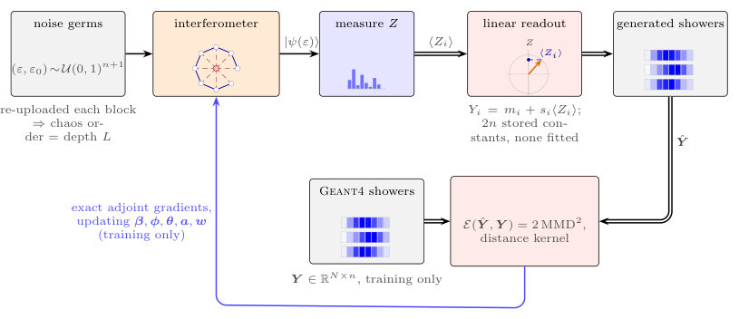
<figcaption class="paper-figure-caption"><b>Fig 1.</b> FIG. 1: QPCE drawn as it executes. The upper row is the entire deployed model. Germs enter the interferometer, one measurement setting yields ⟨Zi⟩, and the fixed affine readout returns a shower. Grey marks data, orange the quantum circuit, blue the measurement and red the unit conversion. The interferometer icon is the actual coupler graph drawn on a ring layout, in which the solid edges are the seven-edge path (the ring is left open, |E| = 7, native to the heavy-hex lattice with zero SWAPs), each edge carrying one trainable phase per block, and the dashed chords are the one shared germ wire ε0, read by every qubit with a trainable amplitude at zero two-qubit cost. Re-uploading the germs at...</figcaption>
</figure>
<figure class="paper-figure-card">
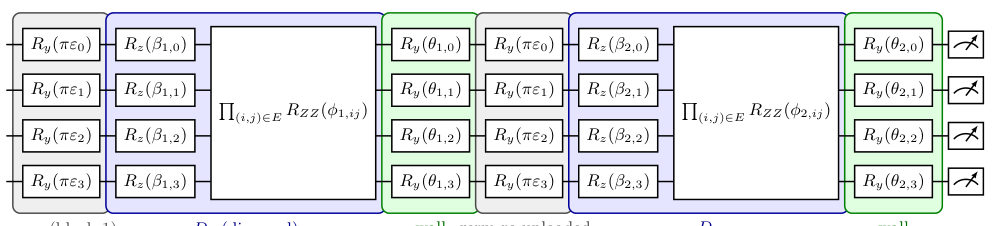
<figcaption class="paper-figure-caption"><b>Fig 2.</b> FIG. 2: QPCE interferometer, drawn for n = 4, L = 2 with unit germ amplitudes for legibility. In the deployed model each germ gate is Ry(π(wiεi + aiε0)), Eq. (3). The germ encodings open every block, each germ wire therefore enters L rotation angles, and ⟨Zi⟩is a trigonometric chaos expansion of exact degree L in each wire (Eq. (5)). Trainable Rz(β) and RZZ(ϕ) form the diagonal blocks Dℓ. The walls Ry(θℓ,i) are trainable. All RZZ within a block commute, so the coupler block is one multi-wire diagonal gate that schedules in χ′(G) parallel layers (Sec. III D). Setting all ϕℓ,ij = 0 and freezing ε0 makes the circuit a tensor product of single-qubit unitaries, each driven only by its own germ,...</figcaption>
</figure>
<figure class="paper-figure-card">
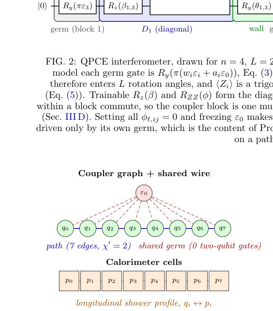
<figcaption class="paper-figure-caption"><b>Fig 3.</b> FIG. 3: Deployed coupler graph and the one-to-one map from qubits to cells. Solid lines mark the eight-qubit path, |E| = 7, native to the heavy-hex lattice with zero routing SWAPs. Each edge carries one trainable phase per block, L|E| = 42 coupler phases in total, and the commuting block schedules in χ′ = 2 parallel layers. The dashed line marks the shared germ wire ε0, read by every qubit with trainable amplitude ai at zero two-qubit cost, carrying the rank-one global mode of the data (Sec. III C 5). Removing the couplers and freezing ε0 makes the generated cells exactly independent (Proposition 1). Removing the couplers with ε0 free isolates the shared-latent channel. The dense C8(1, 2)...</figcaption>
</figure>
<figure class="paper-figure-card">
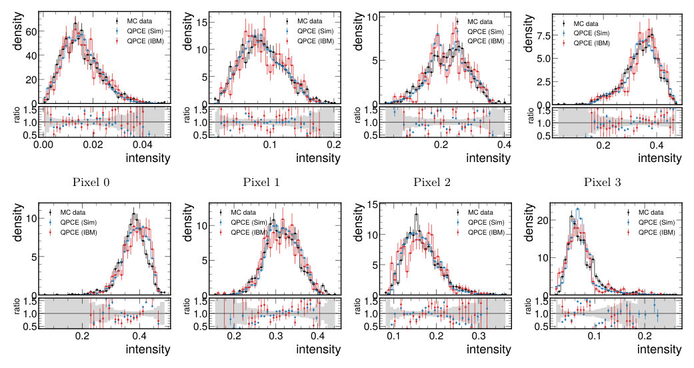
<figcaption class="paper-figure-caption"><b>Fig 4.</b> FIG. 4: Marginal intensity distributions for the eight calorimeter cells. Geant4 reference (black points, ±1σ multinomial errors), noiseless simulation of the deployed circuit (step), and ibm fez (points), 500 showers at 1152 shots. These marginals are produced by the circuit through the linear readout, so the panels are direct device tests. The readout-confusion unfolding and the gain absorbed by the calibration in Sec. VI B affect these panels and provably nothing in Figs. 6 and 7. Ratio-panel and error conventions as in Appendix A.</figcaption>
</figure>
<figure class="paper-figure-card">
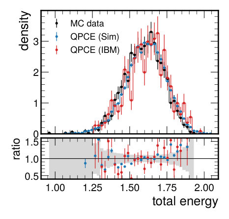
<figcaption class="paper-figure-caption"><b>Fig 5.</b> FIG. 5: Total deposited energy E = P</figcaption>
</figure>
</div>

<p><strong>Summary.</strong> This paper introduces an Interferometric Quantum Polynomial Chaos Expansion (QPCE) as a novel generative model for simulating particle calorimeter showers. By encoding the simulation into a quantum circuit, it leverages the depth of the circuit rather than classical coefficients to capture complex statistical dependencies. This approach allows the model to reproduce subtle structural features of real detector data that are inaccessible to standard classical generative models.</p>
<p><strong>Why it may be interesting.</strong> While focused on HEP, the core methodology—using quantum circuits to encode complex statistical dependencies (chaos expansion) for generative modeling—is highly relevant to simulating non-equilibrium dynamics or complex many-body states where classical sampling fails.</p>
<details>
<summary>Detailed structure</summary>
<p><strong>Main problem.</strong> The primary goal is developing a fast, accurate generative model for simulating high-energy physics calorimeter showers, which are computationally intensive using traditional methods.</p>
<p><strong>Main result.</strong> The proposed Interferometric Quantum Polynomial Chaos Expansion (QPCE) successfully models the complex dependence structure of shower data, reproducing non-trivial structural properties like tail asymmetry that classical models cannot capture.</p>
<p><strong>Method.</strong> It employs a quantum circuit as a generative model, where randomness enters via rotation angles. The training involves minimizing an energy distance between generated and target distributions using adjoint gradients.</p>
<p><strong>Model / system.</strong> The system is the simulation of particle showers in calorimeters. The model is the QPCE, which uses a single quantum circuit whose depth dictates the order of the chaos expansion for latent variables.</p>
<p><strong>Key observables.</strong> Tail asymmetry ($\lambda_L - \lambda_U$), mean absolute correlation $|
ho_S|$, and structural properties like rank statistics ($D$).</p>
<p><strong>Important parameters / regimes.</strong> Circuit depth ($L$) acts as the truncation order; training uses L-BFGS optimization.</p>
<p><strong>Assumptions / limitations.</strong> The method assumes that the circuit structure itself can encode complex, non-classical correlations necessary for accurate simulation.</p>
<p><strong>Figures summary.</strong> Figures compare structural correlation measures (Spearman rank) and tail behavior ($\Lambda$) between Geant4 data, QPCE simulations, and actual hardware measurements.</p>
<p><strong>Paper structure.</strong> The paper introduces the QPCE framework by contrasting it with classical PCE. It details the circuit ansatz, describes the training/generation/verification pipeline, presents results showing structural fidelity on both simulated and physical hardware, and concludes by discussing the model's inherent advantages in attribution.</p>
</details>
<details>
<summary>Abstract</summary>
<p>We present the quantum polynomial chaos expansion, a generative algorithm in which a single circuit is the entire model, and we use it to learn calorimeter images. In a classical chaos expansion the randomness is the input and the coefficients are fitted. Here the randomness is still the only input, entering the circuit as rotation angles and re-uploaded at every block, so that each measured observable is a chaos expansion of the latent variables whose order equals the circuit depth, and what is fitted are the gate angles themselves. Expressivity therefore grows with depth rather than with classical coefficients, correlations between outputs arise only from entangling gates, and a single latent wire read by all qubits carries the collective mode of the data. Nothing fitted stands between the circuit and the sample, so switching the entanglers off is a setting of the model itself and provably yields independent outputs, and attribution of the learned correlations to individual gates becomes a measurement. Choosing between two measurement bases shot by shot sharpens attribution into certification, and the trained model violates the Bell bound obeyed by every classical generative model with local response, whatever its size. We train the model on Geant4 shower data, execute the identical circuit on a superconducting processor with its accuracy loss predicted in advance, prove a no-go theorem for the tail dependence of every smooth generator read out through expectation values, and identify the circuit primitive that removes this limit.</p>
</details>
<p><sub><a href="#top">↑ back to top</a></sub></p>

<p><a id="paper-2608.06212"></a></p>
<h3 id="warm-starting-maxcut-relaxation-via-low-depth-quantum-approximate-optimization-algorithm"><a href="http://arxiv.org/abs/2608.06212v1">Warm-Starting MaxCut Relaxation via Low-Depth Quantum Approximate Optimization Algorithm</a></h3>
<p><strong>Authors:</strong> Bao G. Bach, Ilya Safro, Filip B. Maciejewski<br>
<strong>Type:</strong> theory · <strong>Category:</strong> disordered systems and neural networks · <strong>PDF:</strong> <a href="https://arxiv.org/pdf/2608.06212v1">https://arxiv.org/pdf/2608.06212v1</a><br>
<strong>Analysis basis:</strong> full PDF text, analyzed in chunks
<strong>Topic relevance:</strong> <code>exotic spin models in light-matter</code> <strong>1/5</strong></p>
<div class="figure-strip-hint">↔ Scroll figures horizontally</div>
<div class="paper-figures-scroll">
<figure class="paper-figure-card">
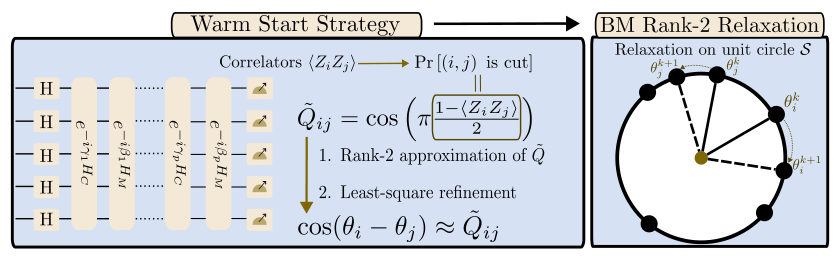
<figcaption class="paper-figure-caption"><b>Fig 1.</b> Fig. 1. Warm Start Framework for Burer-Monteiro rank-two relaxation using QAOA correlators ⟨ZiZj⟩. The corresponding marginal distributions of the probability of edge (i, j) being cut are then mapped via a Goemans-Williamson-inspired trigonometric function to ˜Q. We then find the closest rank-2 correlation matrix via projecting onto the two largest positive eigenvalues of ˜Q, followed by least-squares error optimization. The resulting matrix is then interpreted as encoding the angles θ that are used as the initial point for Burer-Monteiro rank-two relaxation.</figcaption>
</figure>
<figure class="paper-figure-card">
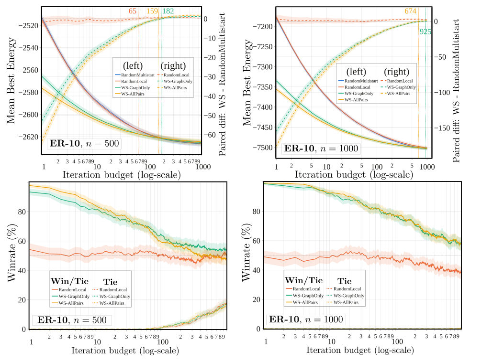
<figcaption class="paper-figure-caption"><b>Fig 2.</b> Fig. 2. The top plots show the best-found energy (left y-axis, solid lines) and paired energy differences (right y-axis, dashed lines) between the given solver (WS with QAOA or reference RandomLocal) and the Random MultiStart baseline as a function of iteration budget, for the ER-10 ensemble with n = 500 (left column) and n = 1000 (right column). The dotted vertical lines (with annotated iterations) correspond to the crossover point where mean stops being ahead of the baseline. The bottom plots show the WinRate – the estimate of the probability that the given solver performs at least as well as the baseline at fixed iteration budget (solid lines); this is augmented with relevant tie...</figcaption>
</figure>
<figure class="paper-figure-card">
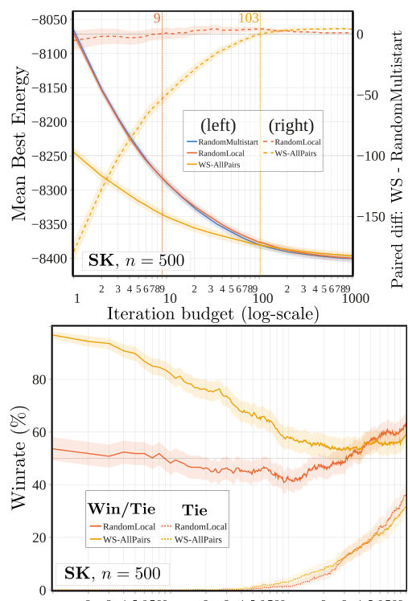
<figcaption class="paper-figure-caption"><b>Fig 3.</b> Fig. 3. Numerical results between different approaches with representation as in Figure. 2, for SK instances.</figcaption>
</figure>
</div>

<p><strong>Summary.</strong> This work proposes using local correlators from the QAOA algorithm to 'warm-start' the Burer-Monteiro relaxation for solving the MaxCut problem. The results show this quantum-informed initialization provides a significant speedup, quickly reaching high-quality solutions compared to random starts. However, it highlights an exploitation/exploration tradeoff, suggesting that while quantum assistance is useful for rapid initial progress, exhaustive classical search might still yield marginally better final results.</p>
<p><strong>Why it may be interesting.</strong> It demonstrates a concrete pathway for near-term quantum utility by showing how limited quantum circuit outputs can provide valuable structural guidance to classical optimization solvers tackling hard combinatorial problems like MaxCut.</p>
<details>
<summary>Detailed structure</summary>
<p><strong>Main problem.</strong> The paper aims to improve classical optimization heuristics for the MaxCut problem by incorporating structural information derived from quantum computation.</p>
<p><strong>Main result.</strong> A warm-start initialization using QAOA local correlators provides a significant early advantage in finding high-quality solutions quickly, though random multi-start methods can eventually surpass it with sufficient computational budget.</p>
<p><strong>Method.</strong> The authors propose a hybrid strategy where low-depth QAOA outputs (local correlators $\langle Z_i Z_j 
angle$) are used to initialize the Burer-Monteiro rank-two relaxation solver for MaxCut, which is then compared against random initialization strategies.</p>
<p><strong>Model / system.</strong> The problem studied is the weighted MAXCUT problem on a graph $G(V, E)$, formulated as an Ising model ($\mathcal{H}_C$). Benchmarks include random Erdős–Rényi (ER-10) graphs and Sherrington-Kirkpatrick (SK) spin glass models.</p>
<p><strong>Key observables.</strong> Best found energy, paired difference in best energy vs. baseline, WinRate (probability of matching or exceeding baseline performance).</p>
<p><strong>Important parameters / regimes.</strong> Graph size ($n=500$ and $n=1000$), QAOA depth parameter ($p=1$).</p>
<p><strong>Assumptions / limitations.</strong> The comparison is limited to the BM refinement stage, not an end-to-end quantum advantage; the warm-start relies on mapping low-depth correlators to initial parameters.</p>
<p><strong>Figures summary.</strong> Figure 2 shows performance vs. iteration budget for ER-10 graphs ($n=500, 1000$), illustrating WS's early lead and MultiStart's eventual crossover. Figure 3 presents similar results for the SK model.</p>
<p><strong>Paper structure.</strong> The paper details deriving QAOA correlators to initialize BM relaxation, compares this warm-start approach against random multi-starts on ER and SK ensembles across varying iteration budgets, and analyzes the resulting exploitation/exploration tradeoff.</p>
</details>
<details>
<summary>Abstract</summary>
<p>Quantum optimization has attracted growing interest as quantum hardware continues to improve, yet state-of-the-art classical solvers remain a formidable benchmark for practical utility. Rather than seeking a fully quantum replacement for classical optimization, we propose a hybrid strategy that uses quantum information to enhance leading classical heuristics. Specifically, we introduce a warm-start method based on local correlators obtained from the Quantum Approximate Optimization Algorithm (QAOA), and use this information to initialize the Burer-Monteiro (BM) rank-two relaxation. We demonstrate numerically that, compared to a random, multi-start initialization baseline (a standard strategy used for BM), this quantum-informed initialization offers a significant head start, i.e., high-quality solutions with very small number of iterations, for two problem classes -- random Erdős Rényi graphs with edge density of $10\%$ (ER-10) and fully-connected Sherrington Kirkpatrick (SK) spin glass models, at $n=500$ and $n=1000$ qubits. At the same time, given enough iterations, the random baseline often eventually catches up and slightly outperforms the warm-start strategy on average, an effect visibly stronger for $n=500$ than for $n=1000$. The results demonstrate an exploitation/exploration tradeoff of using WS to quickly arrive at very good solutions vs exploring slightly better solutions with a larger iterations budget via a standard strategy. Our results highlight how low-depth quantum circuits can provide useful structural information for classical optimization and suggest a promising route toward near-term quantum utility through quantum-assisted initialization.</p>
</details>
<p><sub><a href="#top">↑ back to top</a></sub></p>
<h2 id="other-papers-11">Other papers (11)</h2>
<p><em>Papers from primary archives without highlighted authors or any topic match. Click to expand.</em></p>
<details>
<summary>Show other papers</summary>

<p><a id="paper-2608.05929"></a></p>
<h3 id="a-scale-invariant-theory-of-the-universe"><a href="http://arxiv.org/abs/2608.05929v1">A Scale-Invariant Theory of the Universe</a></h3>
<p><strong>Authors:</strong> Julian Barbour, Maria I. R. Lourenço<br>
<strong>Type:</strong> theory · <strong>Category:</strong> other · <strong>PDF:</strong> <a href="https://arxiv.org/pdf/2608.05929v1">https://arxiv.org/pdf/2608.05929v1</a><br>
<strong>Analysis basis:</strong> full PDF text, analyzed in chunks</p>
<div class="figure-strip-hint">↔ Scroll figures horizontally</div>
<div class="paper-figures-scroll">
<figure class="paper-figure-card">
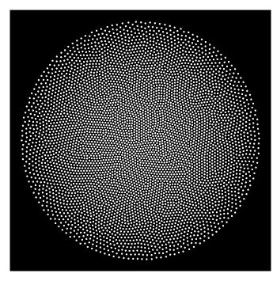
<figcaption class="paper-figure-caption"><b>Fig 1.</b> Figure 1: Two planar central configurations of 5,000 equal-mass particles. The configuration on the left lies at, or very close to, the absolute minimum of the variety, with V=0.585701. The configuration on the right corresponds to a higher critical point, with V=0.595574.</figcaption>
</figure>
</div>
<p><strong>Summary.</strong> This paper proposes a radical ontological shift by eliminating absolute concepts like time and space using Leibniz's principle of sufficient reason. It develops the 'variety' ($V$) as a fundamental, scale-invariant measure of structure within gravitational N-body systems. The core argument suggests that physical evolution is better described by changes in this internal structural complexity rather than external temporal passage.</p>
<p><strong>Why it may be interesting.</strong> While not directly about quantum information or AMO systems, its focus on relational ontology and deriving physical laws from intrinsic symmetries (like scale invariance) echoes foundational questions in quantum gravity and emergent spacetime theories relevant to advanced theoretical physics.</p>
<details>
<summary>Detailed structure</summary>
<p><strong>Main problem.</strong> The central goal is to eliminate absolute structures (like absolute time, position, and scale) from physics by adopting a relational ontology guided by Leibniz's principle of sufficient reason.</p>
<p><strong>Main result.</strong> This leads to a formulation based on scale-invariant ratios, using the 'variety' ($V$) as a central measure of structure that unifies previously distinct solutions in Newtonian gravity.</p>
<p><strong>Method.</strong> The authors apply relational principles (like PSR) to reduce physical descriptions to dimensionless ratios, focusing on critical points of a defined structural variety $V$.</p>
<p><strong>Model / system.</strong> The analysis is initially applied to the gravitational N-body problem under Newtonian gravity but proposes general principles applicable to General Relativity and quantum mechanics.</p>
<p><strong>Key observables.</strong> The 'variety' ($V$), which measures structure via ratios of characteristic lengths ($\ell_{rms} / \ell_{mhl}$), and the derived quantity representing structural 'age', $a(s)$.</p>
<p><strong>Important parameters / regimes.</strong> Dimensionless ratios, total energy ($E=0$), zero angular momentum ($L=0$), and the number of particles ($N$).</p>
<p><strong>Assumptions / limitations.</strong> The universe is treated as a closed system necessitating scale-invariant descriptions; the program assumes that removing absolute structures enriches physical theories.</p>
<p><strong>Figures summary.</strong> Figures illustrate planar central configurations for N-body systems, showing points near the minimum variety value ($a=0$) and those at higher critical points representing different structural states.</p>
<p><strong>Paper structure.</strong> The paper progresses by first establishing the need to eliminate absolute structures (Newtonian context), then developing the mathematical tool of the scale-invariant 'variety' $V$ using N-body dynamics, and finally arguing for the interpretation of time/evolution based on increasing structure ($a(s)$) rather than external time.</p>
</details>
<details>
<summary>Abstract</summary>
<p>Modern physics has achieved extraordinary empirical success while retaining much of the absolute, unobservable structure introduced by Newton, largely without questioning its necessity. We investigate how far this structure can be eliminated by adopting a relational ontology guided by Leibniz's principle of sufficient reason. Removing absolute position, orientation, time and, finally, scale leads naturally to a formulation of the gravitational $N$-body problem where only dimensionless ratios are physically meaningful. Within this framework, the scale-invariant variety $V$ becomes a central quantity, providing a measure of structure, a natural ordering of shapes, and an emergent gravitational arrow of time. We argue that the resulting formulation unifies classes of Newtonian solutions previously regarded as distinct, uncovering a possible new symmetry, suggests a notion of explanation based on timeless spatial correlations rather than temporal evolution, and points towards a more economical ontology. Although developed in the context of Newtonian gravity, the principles proposed here may also offer a new perspective on general relativity and quantum mechanics.</p>
</details>
<p><sub><a href="#top">↑ back to top</a></sub></p>

<p><a id="paper-2608.06072"></a></p>
<h3 id="balanced-routing-for-symmetric-quantum-circuits"><a href="http://arxiv.org/abs/2608.06072v1">Balanced Routing for Symmetric Quantum Circuits</a></h3>
<p><strong>Authors:</strong> Samuel Punch<br>
<strong>Type:</strong> theory · <strong>Category:</strong> quantum information and computing · <strong>PDF:</strong> <a href="https://arxiv.org/pdf/2608.06072v1">https://arxiv.org/pdf/2608.06072v1</a><br>
<strong>Analysis basis:</strong> full PDF text, analyzed in chunks</p>
<div class="figure-strip-hint">↔ Scroll figures horizontally</div>
<div class="paper-figures-scroll">
<figure class="paper-figure-card">
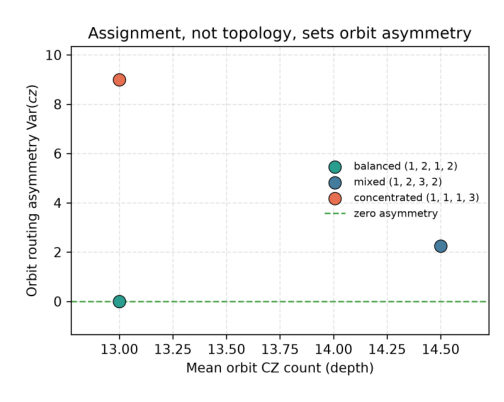
<figcaption class="paper-figure-caption"><b>Fig 1.</b> FIG. 1. The assignment sets the imbalance at fixed depth. Each point is one way of assigning a four-part ring to the same straight path. The balanced assignment (1, 2, 1, 2) has zero spread; the concentrated assignment (1, 1, 1, 3) has the worst spread (9.0 on Qiskit 2.5.1; 12 on older versions). Both sit at the same average depth (13 two-qubit gates) and iden- tical transpiled circuit depth—only the spread differs. In the axis labels, “orbit” denotes a ring role, so “orbit routing asym- metry” is the per-role spread reported as Spread in Table I.</figcaption>
</figure>
<figure class="paper-figure-card">
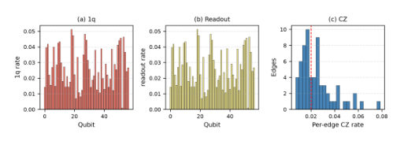
<figcaption class="paper-figure-caption"><b>Fig 2.</b> FIG. 3. The simulated error field (IBM Heron): single-qubit error rates, readout error rates, and the spread of two-qubit gate error across the chip’s links.</figcaption>
</figure>
<figure class="paper-figure-card">
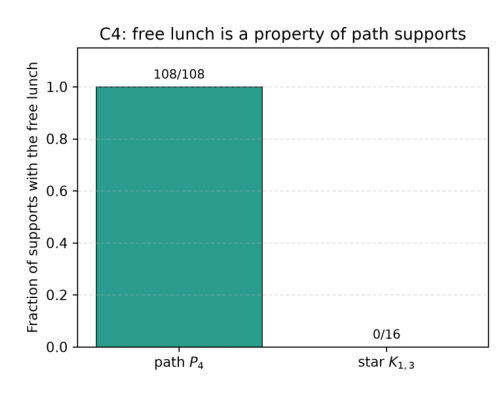
<figcaption class="paper-figure-caption"><b>Fig 3.</b> FIG. 2. Why 16 patches fail. Connected four-qubit patches on heavy-hex come in only two shapes: straight paths and stars. All 108 path patches admit a balanced, cost-free assignment; none of the 16 star patches do. The free lunch is a property of path-shaped patches. (In the figure, “support” is used for a patch.)</figcaption>
</figure>
<figure class="paper-figure-card">
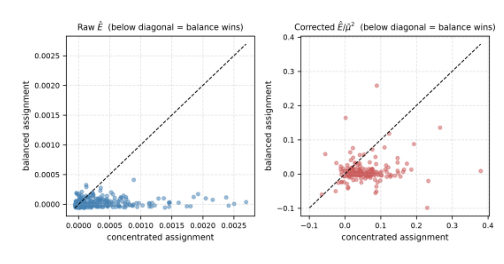
<figcaption class="paper-figure-caption"><b>Fig 4.</b> FIG. 4. Balanced versus concentrated on the same path, un- der realistic noise. Each point is one path; points below the diagonal mean the balanced assignment did better. Left: raw symmetry-breaking. Right: the decoherence-corrected ver- sion. The balanced assignment wins on the large majority of paths.</figcaption>
</figure>
</div>
<p><strong>Summary.</strong> This paper addresses how mapping symmetric quantum circuits onto fixed hardware topologies causes symmetry-breaking due to uneven routing costs. The authors prove that if the physical patch geometry allows it, this imbalance can be eliminated cost-free by making specific compiler assignments. This suggests that optimizing for balanced resource distribution is a crucial, often overlooked, objective in quantum compilation.</p>
<p><strong>Why it may be interesting.</strong> It provides concrete, actionable guidelines for quantum compiler design by shifting focus from minimizing total depth to ensuring equitable resource distribution across symmetric components of the circuit.</p>
<details>
<summary>Detailed structure</summary>
<p><strong>Main problem.</strong> Mapping quantum circuits with inherent symmetries onto physical hardware restricts connectivity introduces 'routing overhead' that breaks theoretical symmetry due to unequal error accumulation across identical logical roles.</p>
<p><strong>Main result.</strong> When patch geometry permits, achieving a perfectly balanced distribution of routing costs is possible without increasing circuit depth, suggesting this imbalance is primarily a compiler optimization choice rather than an unavoidable hardware limitation.</p>
<p><strong>Method.</strong> The authors combine theoretical analysis (exhaustive search on lattice patches) with quantitative simulation using realistic noise models to measure symmetry-breaking metrics.</p>
<p><strong>Model / system.</strong> The study analyzes quantum circuits requiring cyclic symmetries (e.g., four-part or six-part rings) mapped onto a 57-qubit 'heavy-hex' lattice structure.</p>
<p><strong>Key observables.</strong> Routing Imbalance (measured as variance/spread of per-role measurements), Decoherence-corrected symmetry-breaking reduction ($\hat{E}$ and $\mathcal{E}_{	ext{rel}}$).</p>
<p><strong>Important parameters / regimes.</strong> The size and shape of the physical qubit patch (e.g., path vs. star-shaped) relative to the required circuit symmetry.</p>
<p><strong>Assumptions / limitations.</strong> The analysis assumes that compiler optimization should prioritize even cost distribution over simply minimizing average depth, especially when geometry allows for balance.</p>
<p><strong>Figures summary.</strong> Figures illustrate the difference between balanced (zero spread) and concentrated assignments on paths, and show simulated error distributions demonstrating significant reduction in symmetry-breaking via balancing.</p>
<p><strong>Paper structure.</strong> The paper establishes the problem of symmetry breaking due to routing overhead, develops a two-level model distinguishing shape constraints from assignment choices, proves topological constraints using exhaustive search for specific ring structures, and validates findings through noise simulations.</p>
</details>
<details>
<summary>Abstract</summary>
<p>Mapping quantum programs to restricted physical chips requires SWAP operations, incurring depth and error penalties. In symmetric programs, this routing overhead breaks theoretical symmetry because identical logical roles experience unequal shuffling. While often attributed to hardware topology alone, we show this is a two-level phenomenon. A qubit patch's shape dictates if it can host a balanced assignment. When balance is possible, the actual imbalance is set by the logical-to-physical assignment, meaning a balanced assignment can distribute routing costs perfectly evenly at no extra depth. Through exhaustive search on a 57-qubit "heavy-hex" lattice, we prove these topological constraints. For a four-part ring, 108 of 124 connected patches admit a cost-free balanced assignment, with the 16 exceptions being star-shaped. For a six-part ring, cost-free balance is impossible on compact patches. For a fully connected four-part symmetry, balance is structurally impossible at any depth. Simulations using realistic error rates show that, relative to the worst-case concentrated assignment, balanced assignments reduce symmetry-breaking by 92.7% (95% CI [+89.8%, +95.3%]) for the raw metric and 87.0% (95% CI [+79.6%, +94.1%]) for the decoherence-corrected measure (p = 2.45 x 10^-32). Substrate error heterogeneity accounts for at most 10.8% of this effect. Notably, switching to the compiler's highest generic optimization level did not yield a statistically significant change in routing imbalance, highlighting the need for targeted symmetry-aware passes. When patch geometry permits, routing imbalance is a compiler choice rather than a hardware limitation. Thus, symmetry-aware assignment should be a primary objective for compiler optimization and chip design.</p>
</details>
<p><sub><a href="#top">↑ back to top</a></sub></p>

<p><a id="paper-2608.05688"></a></p>
<h3 id="beyond-transversality-structure-of-clifford-circuits-for-css-codes"><a href="http://arxiv.org/abs/2608.05688v1">Beyond transversality: structure of Clifford circuits for CSS codes</a></h3>
<p><strong>Authors:</strong> Victor V. Albert<br>
<strong>Type:</strong> theory · <strong>Category:</strong> quantum information and computing · <strong>PDF:</strong> <a href="https://arxiv.org/pdf/2608.05688v1">https://arxiv.org/pdf/2608.05688v1</a><br>
<strong>Analysis basis:</strong> full PDF text, analyzed in chunks</p>
<div class="figure-strip-hint">↔ Scroll figures horizontally</div>
<div class="paper-figures-scroll">
<figure class="paper-figure-card">
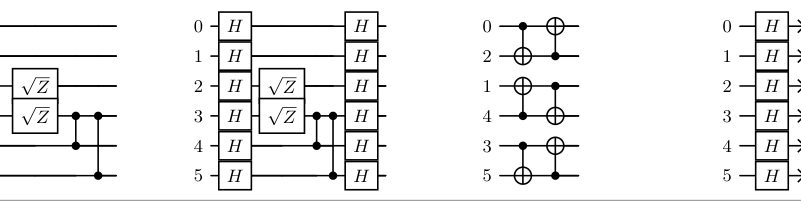
<figcaption class="paper-figure-caption"><b>Fig 1.</b> FIG. 1. Four Clifford gate families of a CSS code. The first five rows list the name, symplectic embedding, code- preserving condition, physical gates, and circuit realization [the right-hand sides of Eqs. (4), (6), (8), and (9)] of each family. The control–target sequence cm →tm of a CNOT network is read off a Gaussian elimination of K, one CNOT per row addition, giving the factorization of K shown in the embedding row. The bottom row depicts circuits that realize the families on the doubly-even self-dual [[6, 2, 2]] code CX=CZ= span{111100, 110011}, with symplectic logical basis LX=LZ={100101, 010101}. (a) √</figcaption>
</figure>
<figure class="paper-figure-card">
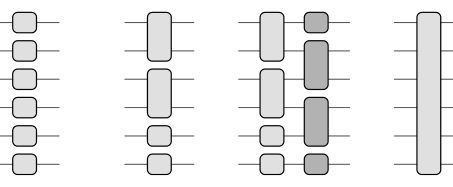
<figcaption class="paper-figure-caption"><b>Fig 2.</b> FIG. 2. Gate groups and their generating sets. (a) A transversal circuit, consisting of a single-qubit gate on each of the six qubits in this sketch. Code-preserving circuits of this shape form the transversal group N ∅. (b) A depth-one two- local layer on a fixed matching M of the qubits; each brick is a generic Clifford gate on a pair of M or on an unmatched qubit. The code-preserving layers on M form the group N M. (c) A stack of two depth-one layers on different matchings. Stacks of code-preserving layers over arbitrary matchings generate the two-fold transversal group N 2fold. (d) A depth-one six- local layer. Every circuit can be compressed into this shape, and the code-preserving...</figcaption>
</figure>
<figure class="paper-figure-card">
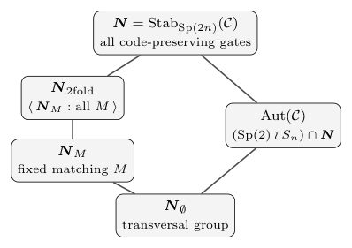
<figcaption class="paper-figure-caption"><b>Fig 3.</b> FIG. 3. Gate-group inclusion. All groups are taken mod- ulo Pauli operators and lie inside N, the group of code- preserving Cliffords. Lines are subgroup inclusions, read up- ward; the two chains meet at the transversal group N ∅of Section IV. Every inclusion drawn is strict in general, and the groups N 2fold and Aut(C) are incomparable. Allowing for qubit permutations to compensate non-code-preserving transversal gates gives the automorphism group Aut(C). The transversal and automorphism groups carry no entangling two-local gates, while the group of all matchings includes gates for all possible matchings M. Some permutations can- not be expressed as layers of code-preserving two-local...</figcaption>
</figure>
</div>
<p><strong>Summary.</strong> This paper rigorously characterizes the algebraic structure of Clifford circuits that can preserve the encoding properties of CSS quantum error-correcting codes. By decomposing these circuits into fundamental diagonal and CNOT layers, the authors determine which specific codes allow their logical operations to be generated by relatively simple 'two-fold transversal' gates. This is crucial for designing efficient, fault-tolerant quantum computation protocols.</p>
<p><strong>Why it may be interesting.</strong> This work provides deep structural insights into the gate sets required for fault-tolerant quantum computation, which underpins many theoretical models of quantum information processing relevant to AMO physics platforms like trapped ions or superconducting qubits.</p>
<details>
<summary>Detailed structure</summary>
<p><strong>Main problem.</strong> The paper characterizes the structure of Clifford circuits necessary for implementing fault-tolerant logical operations within Calderbank–Shor–Steane (CSS) quantum error-correcting codes.</p>
<p><strong>Main result.</strong> It establishes that code-preserving circuits decompose into products of diagonal gates, and it identifies 78 CSS codes whose full logical Clifford group is generated by two-fold transversal circuits.</p>
<p><strong>Method.</strong> The authors use algebraic methods involving symplectic geometry to analyze the constraints imposed on circuit blocks (Z-diagonal, X-diagonal, CNOT) required for code preservation.</p>
<p><strong>Model / system.</strong> The study focuses on CSS quantum error-correcting codes, which are analyzed using a symplectic formalism where Pauli operators are represented by labels $(x|z)$. The circuits implement logical gates acting on these encoded qubits.</p>
<p><strong>Key observables.</strong> The size and structure of the logical Clifford group generated by specific circuit families (e.g., two-fold transversal group).</p>
<p><strong>Important parameters / regimes.</strong> Code parameters such as distance (3, 4, 5, etc.) and rate ($2/5$, $3/4$, etc.).</p>
<p><strong>Assumptions / limitations.</strong> The analysis assumes the relevance of Clifford circuits for fault tolerance and relies on decomposing general code-preserving maps into specific product structures.</p>
<p><strong>Figures summary.</strong> Figure 1 illustrates four key Clifford gate families (Z-diagonal, X-diagonal, CNOT, partial duality) for a CSS code. Figure 2 schematically details the generating sets for different gate groups ($\mathcal{N}_{\emptyset}$, $\mathcal{N}_M$, $\mathcal{N}_{2	ext{fold}}$, $\mathcal{N}$).</p>
<p><strong>Paper structure.</strong> The paper proceeds by characterizing four distinct families of circuits (code-preserving, transversal, etc.), deriving their normal forms using algebraic constraints, and finally applying these results to enumerate specific CSS codes whose logical group structure is determined.</p>
</details>
<details>
<summary>Abstract</summary>
<p>We characterize four groups of Clifford circuits for Calderbank--Shor--Steane (CSS) codes that are relevant to fault-tolerant logical operations. First, we show that every code-preserving Clifford circuit is a product of Z-diagonal circuits, composed of S and CZ gates, and their X-basis analogues. Second, we define the two-fold transversal group, generated by depth-one two-local code-preserving circuits, and show that each of its elements can be expressed as a product of layers consisting of either Z-diagonal, X-diagonal, or CNOT gates. As a corollary, every transversal gate is a product of three transversal diagonal circuits; for connected non-self-dual codes, two such circuits suffice.   We further show that every code-preserving automorphism circuit, consisting of single-qubit Clifford gates and permutations, has a normal form comprising a Hadamard layer, a permutation, and two diagonal circuits. We also define a two-fold automorphism group, in which a depth-one two-local circuit may be code-preserving up to a permutation, and show that its logical image can be larger than that of the two-fold transversal group.   For 136 CSS codes, we provide explicit generators and determine the logical image of the two-fold transversal group. We find 78 codes whose full logical Clifford group is generated by two-fold-transversal circuits, including codes of distances 3, 4, 5, 6, 8, and 12, with respective rates $2/5$, $3/4$, $1/9$, $1/5$, $2/5$, and $3/56$. We construct three families of CSS codes from bipartite grids, cut-complements, and quadrics, many of which realize the full logical Clifford group in this way. More generally, the induced logical group can be large even when it is not full logical Clifford group: it has order at least $460\,800$ for the gross code and roughly $10^{26}$ for a clustered-cyclic code.</p>
</details>
<p><sub><a href="#top">↑ back to top</a></sub></p>

<p><a id="paper-2608.05432"></a></p>
<h3 id="diversity-in-coded-te-qkd-channels-achieving-infinite-diversity-out-of-finite-system-resources"><a href="http://arxiv.org/abs/2608.05432v1">Diversity in Coded TE-QKD Channels: Achieving Infinite Diversity out of Finite System Resources</a></h3>
<p><strong>Authors:</strong> Shaikha S. Al-Qahtani, Siyao Li, Joseph J. Boutros<br>
<strong>Type:</strong> theory · <strong>Category:</strong> quantum information and computing · <strong>PDF:</strong> <a href="https://arxiv.org/pdf/2608.05432v1">https://arxiv.org/pdf/2608.05432v1</a><br>
<strong>Analysis basis:</strong> full PDF text, analyzed in chunks</p>
<div class="figure-strip-hint">↔ Scroll figures horizontally</div>
<div class="paper-figures-scroll">
<figure class="paper-figure-card">

<figcaption class="paper-figure-caption"><b>Fig 1.</b> Fig. 1. The frame structure on Alice’s side showing the photon position before and after detection jitter noise.</figcaption>
</figure>
<figure class="paper-figure-card">

<figcaption class="paper-figure-caption"><b>Fig 2.</b> Fig. 2. Slepian table of the binary repetition [3, 1, 3]2 code (within the bold frame) and the syndrome on the left.</figcaption>
</figure>
<figure class="paper-figure-card">

<figcaption class="paper-figure-caption"><b>Fig 3.</b> Fig. 3. Slepian table of the shortened Hamming code [6, 3, 3]2 (within the bold frame) and the syndrome on the left.</figcaption>
</figure>
<figure class="paper-figure-card">

<figcaption class="paper-figure-caption"><b>Fig 4.</b> Fig. 4. Hard-decision (algebraic) versus soft-decision of a binary shortened [30, 20, t = 2] BCH code, N = 8 bins per frame.</figcaption>
</figure>
<figure class="paper-figure-card">

<figcaption class="paper-figure-caption"><b>Fig 5.</b> Fig. 5. Hard-decision (algebraic) versus soft-decision of a 3-fold repetition binary [3, 1, 3] code, N = 8 bins per frame.</figcaption>
</figure>
</div>
<p><strong>Summary.</strong> This paper theoretically analyzes error correction in Time-Entanglement Quantum Key Distribution (TE-QKD) to determine conditions for high reliability. It establishes that by using specific error-correcting codes and soft decoding techniques, the system can achieve 'infinite diversity' despite having a physically finite channel diversity. This result is significant because it demonstrates a coding advantage unmatched in classical communication theory.</p>
<p><strong>Why it may be interesting.</strong> It provides a novel theoretical result showing how coding theory can fundamentally alter the asymptotic performance limits of quantum communication channels, achieving an infinite diversity gain unattainable in classical fading models.</p>
<details>
<summary>Detailed structure</summary>
<p><strong>Main problem.</strong> The core problem is establishing the conditions under which an error-correcting code can achieve infinite diversity order in Time-Entanglement Quantum Key Distribution (TE-QKD) reconciliation.</p>
<p><strong>Main result.</strong> The paper proves that for soft-decision decoding, infinite diversity is achieved if and only if the underlying code possesses the Maximal Finite Diversity (MFD) deficient property. This behavior is unique compared to classical fading channels.</p>
<p><strong>Method.</strong> The analysis involves deriving necessary and sufficient conditions using asymptotic limits of error probabilities ($P_e$) with respect to the Signal-to-Noise Ratio ($\gamma$), comparing algebraic vs. soft decoding approaches.</p>
<p><strong>Model / system.</strong> The system is TE-QKD, where raw key bits are encoded across time bins affected by Gaussian noise modeling detector timing jitter. The analysis uses coded error-correcting codes (e.g., Golay, BCH) to process this noisy quantum channel output.</p>
<p><strong>Key observables.</strong> Diversity Order ($d$), Reconciliation Error Probability ($P_e(\gamma)$), and the Maximal Finite Diversity (MFD) property.</p>
<p><strong>Important parameters / regimes.</strong> Signal-to-Noise Ratio ($\gamma$), number of photons per codeword, and the decoding radius.</p>
<p><strong>Assumptions / limitations.</strong> The model assumes independent photon-pair realizations and memoryless detector jitters across channel uses. The analysis focuses on high SNR asymptotic behavior.</p>
<p><strong>Figures summary.</strong> Figure 1 illustrates the frame structure in TE-QKD, showing the physical positions of photons before and after being corrupted by detection jitter noise.</p>
<p><strong>Paper structure.</strong> The paper first defines the diversity order based on error probability decay. It then analyzes two decoding regimes: bounded-distance algebraic decoding (deriving necessary/sufficient conditions) and soft-decision decoding (introducing and utilizing the MFD property).</p>
</details>
<details>
<summary>Abstract</summary>
<p>We establish conditions and give proofs on how an error-correcting code can attain infinite diversity in a time-entanglement quantum key distribution (TE-QKD) reconciliation. The shocking result, never encountered in the literature on coding and communication theory, is that a decoder exhibits an infinite diversity order while the channel has finite diversity and the code has a relatively short finite length.   This paper studies the diversity order of coded TE-QKD reconciliation, defined by the asymptotic slope of the error probability at high signal-to-noise ratio. For bounded-distance algebraic decoding, we derive a necessary and sufficient condition in terms of the number of photons per codeword and the decoding radius.   For soft-decision decoding, we introduce the maximal finite diversity (MFD) property and prove that infinite diversity is achieved if and only if the code is MFD deficient. The infinite diversity in TE-QKD has no counterpart in classical fading channels, where decoding can only multiply a finite diversity order by a finite factor.   Examples of short codes based on Golay, Reed-Solomon, Bose-Chaudhuri-Hocquenghem (BCH), and Reed-Muller codes validate the analysis and illustrate how the TE-QKD system parameters and the relatively short code parameters affect the achievable diversity for both hard and soft information reconciliation.</p>
</details>
<p><sub><a href="#top">↑ back to top</a></sub></p>

<p><a id="paper-2608.05394"></a></p>
<h3 id="feasibility-preserving-quantum-search-for-constrained-transportation-routing"><a href="http://arxiv.org/abs/2608.05394v1">Feasibility-Preserving Quantum Search for Constrained Transportation Routing</a></h3>
<p><strong>Authors:</strong> Dahye Kim, Monika Filipovska<br>
<strong>Type:</strong> theory · <strong>Category:</strong> quantum information and computing · <strong>PDF:</strong> <a href="https://arxiv.org/pdf/2608.05394v1">https://arxiv.org/pdf/2608.05394v1</a><br>
<strong>Analysis basis:</strong> full PDF text, analyzed in chunks</p>
<div class="figure-strip-hint">↔ Scroll figures horizontally</div>
<div class="paper-figures-scroll">
<figure class="paper-figure-card">

<figcaption class="paper-figure-caption"><b>Fig 1.</b> Figure 1 Schematic structure of the Quantum Approximate Optimization Algorithm (QAOA), illustrating the alternating application of the cost Hamiltonian and mixer Hamiltonian across multiple circuit layers, with parameters optimized through a classical outer loop</figcaption>
</figure>
<figure class="paper-figure-card">

<figcaption class="paper-figure-caption"><b>Fig 2.</b> Figure 2 Conceptual comparison of Mixer Operations in standard QAOA and QAOA+. In standard QAOA (left), the generic mixer explores the entire solution space, connecting both feasible (black) and infeasible (white) states. In QAOA+ (right), a constraint-preserving mixer restricts transitions to feasible subspace.</figcaption>
</figure>
<figure class="paper-figure-card">

<figcaption class="paper-figure-caption"><b>Fig 3.</b> Figure 3 Illustration of the two components of the constraint-preserving mixer: intra-vehicle swap (left) and inter-vehicle swap (right).</figcaption>
</figure>
<figure class="paper-figure-card">

<figcaption class="paper-figure-caption"><b>Fig 4.</b> Figure 4 Convergence behavior of the QUBO-based QAOA, penalty-free QAOA+, and Hybrid QAOA+ formulations of the TSP</figcaption>
</figure>
<figure class="paper-figure-card">

<figcaption class="paper-figure-caption"><b>Fig 5.</b> Figure 5 Convergence behavior of the QUBO-based QAOA, penalty-free QAOA+, and Hybrid QAOA+ formulations of the VRP</figcaption>
</figure>
</div>
<p><strong>Summary.</strong> This paper addresses the challenge of applying quantum computation to highly constrained routing problems like TSP and VRP. It introduces a novel QAOA+ framework that enforces route feasibility directly into the quantum mixer operator, moving beyond relying on penalty terms. The results demonstrate that structurally enforcing constraints during search leads to significantly better sampling behavior than traditional methods.</p>
<p><strong>Why it may be interesting.</strong> It provides a concrete example of how structural constraints from classical combinatorial optimization can be mapped into quantum circuit design principles (the mixer operator) to guide the search space, which is relevant for designing algorithms for complex physical simulations or constrained state preparation in quantum systems.</p>
<details>
<summary>Detailed structure</summary>
<p><strong>Main problem.</strong> Developing a quantum search method for constrained transportation routing problems (like TSP/VRP) that inherently preserves feasibility during the quantum search process.</p>
<p><strong>Main result.</strong> The proposed constraint-aware QAOA+ framework, which embeds feasibility logic into the mixer operator, shows superior convergence and probability concentration on feasible routes compared to standard penalty-based QUBO approaches.</p>
<p><strong>Method.</strong> The authors compare three architectures: penalty-based QUBO-QAOA, a penalty-free QAOA+ using a custom feasibility-preserving mixer (quantum neighborhood analogue), and a hybrid approach.</p>
<p><strong>Model / system.</strong> The model is the constrained transportation routing problem (TSP/VRP). The quantum implementation uses the Quantum Alternating Operator Ansatz ($   ext{QAOA+}$) structure, where constraints are enforced via structural modifications to the mixing operator rather than just penalty terms in the cost Hamiltonian.</p>
<p><strong>Key observables.</strong> Feasibility preservation, sampling efficiency, convergence behavior, and probability concentration over low-cost feasible routes.</p>
<p><strong>Important parameters / regimes.</strong> The choice of constraint-handling architecture (penalty vs. mixer enforcement) is the key variable tested across small TSP/VRP instances.</p>
<p><strong>Assumptions / limitations.</strong> Computational experiments are limited to controlled small-instance studies on a classical quantum simulator, and results should not be extrapolated to large-scale quantum advantage claims.</p>
<p><strong>Paper structure.</strong> The paper reviews the limitations of standard QUBO encodings for routing problems, proposes the QAOA+ framework with a custom mixer, compares three constraint architectures (penalty-based, penalty-free mixer, hybrid), and analyzes results on small TSP/VRP instances.</p>
</details>
<details>
<summary>Abstract</summary>
<p>Transportation routing problems such as the Traveling Salesperson Problem (TSP) and the Vehicle Routing Problem (VRP) are characterized by strict feasibility requirements involving customer assignment and visit rules, route sequencing, and depot-return logic alongside cost minimization. Most quantum routing formulations adopt Quadratic Unconstrained Binary Optimization (QUBO) encodings, where feasibility is incorporated indirectly via penalty terms in the cost Hamiltonian. While convenient for standard implementations of the Quantum Approximate Optimization Algorithm (QAOA), QUBO encodings allow the quantum search dynamics to allocate substantial probability to infeasible route configurations. This study develops a transportation-grounded constraint-aware Quantum Alternating Operator Ansatz (QAOA+) framework that embeds feasibility-preserving logic directly into the search operator. We introduce a custom mixer that functions as a quantum analogue of feasibility-preserving routing neighborhoods, using column-wise swap moves, it restricts evolution to feasible configurations while enabling structured exploration of valid routes. We compare three constraint-handling architectures: penalty-based QUBO QAOA, penalty free QAOA+ with the feasibility-preserving mixer, and a Hybrid QAOA+ combining mixer based feasibility with and penalty guidance. Results on small TSP and VRP instances show that constraint-handling architecture strongly influences feasible-route sampling, convergence behavior, and probability concentration over low-cost feasible routes. These findings position constraint-aware quantum search as a methodological extension of transportation routing search approaches, where feasibility is enforced through admissible quantum transitions rather than post-hoc penalties.</p>
</details>
<p><sub><a href="#top">↑ back to top</a></sub></p>

<p><a id="paper-2608.05766"></a></p>
<h3 id="qsci-cmp-quantum-selected-configuration-interaction-with-chemically-motivated-preselection"><a href="http://arxiv.org/abs/2608.05766v1">QSCI-CMP: Quantum-Selected Configuration Interaction with Chemically Motivated Preselection</a></h3>
<p><strong>Authors:</strong> Masahiko Kamoshita, Kosuke Mitarai<br>
<strong>Type:</strong> theory · <strong>Category:</strong> strongly correlated electrons · <strong>PDF:</strong> <a href="https://arxiv.org/pdf/2608.05766v1">https://arxiv.org/pdf/2608.05766v1</a><br>
<strong>Analysis basis:</strong> full PDF text, analyzed in chunks</p>
<div class="figure-strip-hint">↔ Scroll figures horizontally</div>
<div class="paper-figures-scroll">
<figure class="paper-figure-card">

<figcaption class="paper-figure-caption"><b>Fig 1.</b> FIG. 1. Block-level circuits for ˆOT at the two threshold preselections. In both cases the reference shift UHF forms z = x ⊕xHF, a single population-count network Ucnt writes the relevant integer onto an ancilla register, the phase flip ZR flips the sign of the states inside the threshold, and the computation is uncomputed by measurement-based erasure at no T-gate cost (indicated by the tilde). (a) For an excitation threshold, Ucnt counts the n bits of z into the Hamming weight W = 2e. (b) For a hierarchy threshold, a layer U∨first forms the n/2 pairwise ORs z2p ∨z2p+1, which Ucnt counts into 2h. Each variant uses a single population count and costs 4n + O(log n) T gates.</figcaption>
</figure>
<figure class="paper-figure-card">

<figcaption class="paper-figure-caption"><b>Fig 2.</b> FIG. 2. Energy error versus the cumulative number of queries to the state-preparation unitary UGS, comparing direct QSCI, SQD-AA, and QSCI-CMP at three choices of preselection (e ≤2, h ≤2, h ≤2.5) for all six systems. Top row: the 20-qubit systems H10, H2O (10e, 10o), and Cr2 (10e, 10o). Bottom row: the 24-qubit systems H12, H2O (10e, 12o), and Cr2 (12e, 12o). The dashed line marks chemical accuracy (1.6 mHa, relative to the in-active-space reference). Colored dotted segments mark the zero-query initial accuracy of each QSCI-CMP variant, obtained by classically diagonalizing T (R) alone; direct QSCI and SQD-AA have no such point, as they cannot identify important configurations prior to...</figcaption>
</figure>
<figure class="paper-figure-card">

<figcaption class="paper-figure-caption"><b>Fig 3.</b> FIG. 3. Same as Fig. 2 but against the cumulative T-gate count, combining the state-preparation cost at L = No layers (Sec. IV A) and the oracle cost of each method; for direct QSCI, which uses no amplification, only the state-preparation cost enters.</figcaption>
</figure>
<figure class="paper-figure-card">

<figcaption class="paper-figure-caption"><b>Fig 4.</b> FIG. 4. Block-level circuit for the general-preselection oracle ˆOT . The half-adder layer UHA of Eq. (A8) writes the sum bits {sp} and carry bits {cp} onto |0⟩s,c. The out-of-place counting networks Ucnt of Eq. (A1), built from the full adders of Ref. [29], use the workspace |0⟩tmp to sum the n/2 bits of each group and write Ws = P</figcaption>
</figure>
</div>
<p><strong>Summary.</strong> The paper introduces QSCI-CMP, an advanced hybrid quantum-classical algorithm designed to calculate molecular ground states more efficiently than existing methods. It achieves this by using chemical knowledge—specifically excitation level and seniority number—to preselect basis states classically. This significantly reduces the required quantum resources (query count and gate count) for achieving chemical accuracy.</p>
<p><strong>Why it may be interesting.</strong> This work directly addresses computational bottlenecks in quantum chemistry simulations, providing a concrete algorithmic improvement for simulating strongly correlated electron systems that are central to materials science.</p>
<details>
<summary>Detailed structure</summary>
<p><strong>Main problem.</strong> Developing an efficient quantum algorithm for molecular ground-state calculations by improving upon existing methods like Quantum-Selected Configuration Interaction (QSCI).</p>
<p><strong>Main result.</strong> The proposed QSCI-CMP method reduces the query count and gate count required compared to SQD-AA by up to 68% and 72% respectively for 24-qubit systems.</p>
<p><strong>Method.</strong> It hybridizes quantum sampling with classical preselection by fixing 'chemically trivial' basis states based on structural properties (excitation level, seniority number) before running amplitude amplification.</p>
<p><strong>Model / system.</strong> The system is molecular electronic structure calculation, involving the ground-state energy and eigenvectors of an electronic Hamiltonian ($\hat{H}$), mapped onto qubits using a Slater determinant representation relative to a Hartree–Fock reference state.</p>
<p><strong>Key observables.</strong> Ground-state energy, query count, gate count (T-gate count), excitation level ($e(x)$), and seniority number ($\Omega(x)$).</p>
<p><strong>Important parameters / regimes.</strong> The size of the chemically trivial subspace is a tunable parameter that can shift work from quantum sampling to classical diagonalization.</p>
<p><strong>Assumptions / limitations.</strong> Previous methods suffer from measurement bottlenecks (QSCI) or gate counts growing with measured states (SQD-AA); QSCI-CMP assumes chemical knowledge allows preselection of important basis states.</p>
<p><strong>Figures summary.</strong> Figures detail block-level quantum circuits for the oracle $\hat{O}_T$, showing components like reference shifts, population count, and phase flips used to enforce constraints on excitation energy and seniority number.</p>
<p><strong>Paper structure.</strong> The paper introduces QSCI-CMP as an improvement over SQD-AA by incorporating chemical knowledge. It details how this knowledge is encoded into the oracle via structural quantities (e.g., $h(x)$) and provides numerical demonstrations showing significant resource reductions compared to baseline methods.</p>
</details>
<details>
<summary>Abstract</summary>
<p>We present QSCI-CMP, a quantum-classical hybrid algorithm for molecular ground-state calculations that reduces both the query count and the gate count of sample-based quantum diagonalization with amplitude amplification (SQD-AA). SQD-AA mitigates the measurement bottleneck of quantum-selected configuration interaction (QSCI) by amplifying the basis states that have not yet been measured. Its oracle, however, specifies the measured states by listing them one by one, so its gate count grows with the number of collected states. Moreover, the quantum resources are spent even on states whose importance is evident from chemical knowledge, such as low-order excitations from the Hartree-Fock reference, which could be collected classically at the outset. We therefore propose to fix such chemically trivial states in advance, include them in the diagonalization subspace from the start, and exclude them from the amplification target, using a low-cost oracle that recognizes them through the excitation level and the seniority number of each basis state. We numerically demonstrate that QSCI-CMP reduces the query count and the gate count required to reach chemical accuracy by up to approximately 68% and 72% relative to SQD-AA for 24-qubit systems. The chemically trivial subspace is freely tunable within the classical computational budget. A larger subspace shifts more work onto the classical solver and increases the reduction in quantum cost, and when it captures the ground state sufficiently well, no quantum sampling is needed at all. We also point out that a query-optimal iteration count known from the analysis of quantum search further reduces the query count of both methods by approximately 12%.</p>
</details>
<p><sub><a href="#top">↑ back to top</a></sub></p>

<p><a id="paper-2608.05821"></a></p>
<h3 id="quantum-error-correction-with-global-control"><a href="http://arxiv.org/abs/2608.05821v1">Quantum error correction with global control</a></h3>
<p><strong>Authors:</strong> Roberto Menta, Lindsay Bassman Oftelie, Ashkan Abedi, Francesco Cioni, Marco Polini, Seth Lloyd, Francesco Caravelli, Vittorio Giovannetti<br>
<strong>Type:</strong> theory · <strong>Category:</strong> quantum information and computing · <strong>PDF:</strong> <a href="https://arxiv.org/pdf/2608.05821v1">https://arxiv.org/pdf/2608.05821v1</a><br>
<strong>Analysis basis:</strong> full PDF text, analyzed in chunks</p>
<div class="figure-strip-hint">↔ Scroll figures horizontally</div>
<div class="paper-figures-scroll">
<figure class="paper-figure-card">

<figcaption class="paper-figure-caption"><b>Fig 1.</b> FIG. 1. Globally controlled quantum architecture with zero qubit overhead. (a) The architecture possesses a ring topology with N (even) computational qubits Qi (gray circles), here N = 8, arranged on a circle with XY nearest-neighbor couplings. Red (blue) links denote the global coupling g(t) [h(t)], acting uniformly on the odd (even) bonds; even- and odd-indexed qubits are addressed by two separate global drives. Green links denote the two locally controlled couplings g¯i(t) and h¯i(t) on the bonds adjacent to the single lo- cally addressable site ¯i (dashed circle; ¯i = 5 in the figure), where single-qubit gates are also applied. Computational two-qubit gates are performed on these two...</figcaption>
</figure>
<figure class="paper-figure-card">

<figcaption class="paper-figure-caption"><b>Fig 2.</b> FIG. 2. Logical error rate versus physical error rate for the cyclic code executed on the globally-controlled ring architecture, for code distances d = 5 (blue), d = 7 (green), and d = 9 (red), using enough measurement sites for M = 5 (dotted curves), M = 3 (dashed curves), and M = 2 (solid curves) rounds of measurement (see Ta- ble I). Circles represent data obtained from Monte Carlo simulations under the phenomenological noise model, while lines are fit to guide the eye. The mutual crossing point within each set of code distances gives the QEC threshold p(M) th , demarcated with a star. The dashed- dotted black line marks break-even (logical error rate equal to physical error rate).</figcaption>
</figure>
</div>
<p><strong>Summary.</strong> This paper introduces a novel, globally-controlled architecture for quantum computing that solves the qubit overhead problem in Quantum Error Correction (QEC). By using global driving fields on a ring of qubits, it enables syndrome extraction circuits entirely with global gates. This approach yields significantly higher theoretical QEC thresholds compared to previous local control schemes.</p>
<p><strong>Why it may be interesting.</strong> This work provides a theoretical blueprint for scaling quantum computation by fundamentally changing how error correction is implemented—by making all qubits computational and globally addressable—which has implications for superconducting circuit design.</p>
<details>
<summary>Detailed structure</summary>
<p><strong>Main problem.</strong> The primary challenge is achieving fault tolerance in quantum computation by overcoming hardware scaling bottlenecks, specifically addressing the 'wiring problem' associated with conventional local control architectures.</p>
<p><strong>Main result.</strong> The authors propose a globally-controlled architecture that implements Quantum Error Correction (QEC) with zero auxiliary qubit overhead and achieves QEC thresholds significantly higher than previous estimates.</p>
<p><strong>Method.</strong> They utilize global driving fields to implement programmable pairwise exchange operations, enabling syndrome extraction circuits using only global gates for cyclic stabilizer codes.</p>
<p><strong>Model / system.</strong> The model is a homogeneous ring of N computational qubits coupled via nearest-neighbor interactions. Control is achieved through time-dependent Hamiltonian engineering that allows information routing and gate operations globally.</p>
<p><strong>Key observables.</strong> QEC Threshold ($p_{th}$), Logical Error Rate, Qubit Overhead (aiming for zero).</p>
<p><strong>Important parameters / regimes.</strong> Code distance ($d$), Number of qubits ($N$), Global coupling strengths ($h(t), g(t)$).</p>
<p><strong>Assumptions / limitations.</strong> The model assumes the ability to selectively activate desired interactions using global detuning, and that syndrome measurement can be sequentially performed despite the global nature of the gates.</p>
<p><strong>Figures summary.</strong> Figures illustrate the ring topology with global couplings, connectivity graphs showing universal computation paths, and performance plots comparing achievable QEC thresholds against physical error rates.</p>
<p><strong>Paper structure.</strong> The paper develops the architecture by first establishing global control to bypass wiring limits. It then details the implementation of cyclic stabilizer codes for syndrome extraction using only global gates, culminating in threshold calculations and discussions on improving performance via local measurement sites.</p>
</details>
<details>
<summary>Abstract</summary>
<p>Reaching fault tolerance means scaling qubit counts by orders of magnitude, a jump that conventional superconducting architectures cannot sustain without solving the so-called `wiring problem'. Global control sidesteps this bottleneck, but implementing quantum error correction (QEC) on previously proposed global architectures incurs extremely steep overhead costs, due to the need for separate correction procedures for the computational and auxiliary qubits that comprise the global device. We resolve this by introducing the first globally-controlled architecture with zero qubit overhead. Every physical qubit is a computational qubit, and thus, every qubit is protected under a single error correcting scheme. We identify a class of cyclic stabilizer codes realizable through global iSWAP and single-qubit gates, yielding QEC thresholds nearly seven orders of magnitude larger than previous estimates for globally-controlled arrays. We further show these thresholds improve systematically as the global architecture is augmented with a limited amount of local measurement sites, demonstrating a trade-off between wiring simplicity and fault-tolerant performance.</p>
</details>
<p><sub><a href="#top">↑ back to top</a></sub></p>

<p><a id="paper-2608.05287"></a></p>
<h3 id="scalable-circuit-cutting-a-framework-for-combined-gate-and-wire-cuts-using-gate-groups"><a href="http://arxiv.org/abs/2608.05287v1">Scalable Circuit Cutting: A Framework for Combined Gate and Wire Cuts Using Gate Groups</a></h3>
<p><strong>Authors:</strong> Fiona Jiali Fröhler, Yannick Stade, Christian Ufrecht, Daniel D. Scherer, Robert Wille<br>
<strong>Type:</strong> theory · <strong>Category:</strong> quantum information and computing · <strong>PDF:</strong> <a href="https://arxiv.org/pdf/2608.05287v1">https://arxiv.org/pdf/2608.05287v1</a><br>
<strong>Analysis basis:</strong> full PDF text, analyzed in chunks</p>
<div class="figure-strip-hint">↔ Scroll figures horizontally</div>
<div class="paper-figures-scroll">
<figure class="paper-figure-card">

<figcaption class="paper-figure-caption"><b>Fig 1.</b> Figure 1. Different kinds of quantum circuit cuts and the circuit cutting workflow.</figcaption>
</figure>
<figure class="paper-figure-card">

<figcaption class="paper-figure-caption"><b>Fig 2.</b> Figure 2. Example illustrating the advantage of combined cutting. While pure gate or wire cuts may be optimal within their own categories, a unified strategy can identify mixed solutions that significantly reduce total sampling overhead.</figcaption>
</figure>
<figure class="paper-figure-card">

<figcaption class="paper-figure-caption"><b>Fig 3.</b> Figure 4. Example of combined gate, wire, and joint cuts.</figcaption>
</figure>
<figure class="paper-figure-card">

<figcaption class="paper-figure-caption"><b>Fig 4.</b> Figure 6. Mapping circuit in Fig. 2 to a circuit topology graph to find gate and wire cuts.</figcaption>
</figure>
<figure class="paper-figure-card">

<figcaption class="paper-figure-caption"><b>Fig 5.</b> Figure 5. Mapping circuit in Fig. 2 to an interaction graph to find gate cuts.</figcaption>
</figure>
</div>
<p><strong>Summary.</strong> This work presents a unified framework to solve quantum circuit cutting by jointly optimizing gate and wire cuts. It models the problem using an augmented graph structure and applies advanced graph partitioning heuristics to minimize exponentially growing sampling overheads. This allows for the efficient decomposition of large circuits into smaller, executable pieces on limited quantum hardware.</p>
<p><strong>Why it may be interesting.</strong> While focused on quantum computation theory, the underlying methodology—graph partitioning to optimize resource constraints (qubits/overhead)—is highly relevant for designing complex quantum simulations or mapping algorithms onto realistic hardware architectures.</p>
<details>
<summary>Detailed structure</summary>
<p><strong>Main problem.</strong> The core challenge is minimizing the exponentially growing sampling overhead associated with circuit cutting, which is necessary to execute large quantum circuits on hardware limited by qubit count.</p>
<p><strong>Main result.</strong> The proposed unified framework significantly reduces total sampling overhead compared to optimizing gate or wire cuts in isolation by jointly considering gate groups alongside both types of cuts.</p>
<p><strong>Method.</strong> It formulates the problem as a scalable graph partitioning task, utilizing an augmented Circuit Topology Graph and applying modified Karmarkar-Karp (KL) heuristics.</p>
<p><strong>Model / system.</strong> The model is based on quantum circuits ($C$) composed of qubits ($Q$) and two-qubit gates. The system is constrained by hardware limitations ($ ext{qmax}$), requiring partitioning into independent subcircuits.</p>
<p><strong>Key observables.</strong> Sampling Overhead ($\mathcal{S}$), which must be minimized; also diagnostic feedback on circuit suitability for cutting.</p>
<p><strong>Important parameters / regimes.</strong> The number of qubits, the maximum allowed qubits per subcircuit ($  ext{qmax}$), and various sampling overhead constants ($\kappa$).</p>
<p><strong>Assumptions / limitations.</strong> Existing approaches often treat gate and wire cuts independently, missing opportunities for optimal joint decomposition. The problem is NP-hard.</p>
<p><strong>Figures summary.</strong> Figures illustrate the workflow of circuit cutting (Input $
ightarrow$ Cut Placement $
ightarrow$ Subcircuit Execution); they compare sampling overheads for gate-only vs. wire-only vs. combined optimal cuts; and show examples of how joint cutting reduces overhead significantly.</p>
<p><strong>Paper structure.</strong> The paper introduces a unified framework that combines gate and wire cutting into a single partitioning strategy, leveraging joint cutting via novel gate grouping techniques, and solves this by formulating the problem as a scalable graph partitioning task.</p>
</details>
<details>
<summary>Abstract</summary>
<p>Quantum circuit cutting enables the execution of large circuits on devices with a limited number of qubits by partitioning circuits into independent subcircuits. However, this introduces a sampling overhead, which grows exponentially with the number of cuts, rendering the choice of cut placements critical for practical circuit cutting. Determining optimal cut placements remains computationally challenging, particularly as circuits grow in size. Additionally, existing circuit cutting approaches typically treat gate and wire cuts independently. Those combining both cutting approaches, however, do not take advantage of joint cutting, i.e., identifying common gate groups and cutting them jointly for a reduced overhead. This work presents a unified framework that combines gate and wire cutting within a single partitioning strategy, enabling more efficient circuit decompositions. Moreover, our approach incorporates joint cutting via a novel gate grouping technique, further reducing sampling overhead. By formulating the cut placement problem as a scalable graph partitioning task, our method efficiently identifies near-optimal cut placements for large circuits, also providing diagnostic feedback on whether circuits are suitable for cutting.</p>
</details>
<p><sub><a href="#top">↑ back to top</a></sub></p>

<p><a id="paper-2608.05427"></a></p>
<h3 id="school-network-reorganization-under-educational-and-spatial-constraints-using-classical-and-quantum-optimization"><a href="http://arxiv.org/abs/2608.05427v1">School network reorganization under educational and spatial constraints using classical and quantum optimization</a></h3>
<p><strong>Authors:</strong> Alessia Ciacco, Luigi Di Puglia Pugliese, Francesca Guerriero<br>
<strong>Type:</strong> both · <strong>Category:</strong> other · <strong>PDF:</strong> <a href="https://arxiv.org/pdf/2608.05427v1">https://arxiv.org/pdf/2608.05427v1</a><br>
<strong>Analysis basis:</strong> full PDF text, analyzed in chunks</p>
<div class="figure-strip-hint">↔ Scroll figures horizontally</div>
<div class="paper-figures-scroll">
<figure class="paper-figure-card">

<figcaption class="paper-figure-caption"><b>Fig 1.</b> Figure 1: Schematic representation of the main institutional configurations of the Italian school system, including educational levels and organizational structure.</figcaption>
</figure>
</div>
<p><strong>Summary.</strong> This paper proposes an advanced mathematical framework using Integer Linear Programming to solve the complex problem of reorganizing public school networks. It applies this model to real Italian data, comparing classical computational results against those obtained from hybrid quantum optimization environments. The work establishes a robust decision-support tool for sustainable and equitable resource allocation in educational infrastructure.</p>
<p><strong>Why it may be interesting.</strong> While the core problem is civil engineering/operations research, the explicit reformulation into a constrained quadratic model and subsequent testing on Quantum Annealing environments makes it relevant for demonstrating near-term applications of quantum computation to complex combinatorial optimization problems.</p>
<details>
<summary>Detailed structure</summary>
<p><strong>Main problem.</strong> The paper addresses the strategic planning problem of school network reorganization, aiming to efficiently allocate public resources while balancing demographic trends, accessibility, and educational requirements.</p>
<p><strong>Main result.</strong> The proposed optimization framework effectively identifies optimal aggregation plans for real-world regions like Calabria, demonstrating its potential as a robust decision-support tool for equitable infrastructure planning.</p>
<p><strong>Method.</strong> It develops an Integer Linear Programming (ILP) formulation that is also reformulated as a constrained quadratic model, allowing it to be implemented and tested within a hybrid quantum optimization environment alongside classical solvers.</p>
<p><strong>Model / system.</strong> The system modeled is the public school network of a region (e.g., Calabria), which must be partitioned into optimal clusters based on complex constraints including travel time, capacity, and administrative compatibility.</p>
<p><strong>Key observables.</strong> Optimal aggregation plans, objective function values ($z_C$ vs $z_Q$), structural indicators ($    ext{CZ},    ext{KR},    ext{RC}$, etc.), and solution times for various policy scenarios.</p>
<p><strong>Important parameters / regimes.</strong> Policy configurations (64 tested), maximum execution time limits ($T_{IC}^{max} = 1200 	ext{ s}$), and integration of multiple constraints like territorial criticality and accessibility.</p>
<p><strong>Assumptions / limitations.</strong> The methodology assumes that the problem can be accurately modeled by integrating geographical, administrative, and educational criteria into a single optimization framework; quantum performance is noted as potentially limited by current hardware capabilities.</p>
<p><strong>Figures summary.</strong> The notes reference tables comparing classical vs. quantum objective values and solution times across policy configurations for the Calabria case study.</p>
<p><strong>Paper structure.</strong> The paper systematically reviews related literature on facility planning, details its novel ILP/quadratic formulation integrating multiple constraints, applies this framework to a real-world Italian case study (Calabria), and compares classical optimization results with preliminary quantum annealing results.</p>
</details>
<details>
<summary>Abstract</summary>
<p>School network reorganization is a strategic planning problem that requires balancing demographic trends, territorial accessibility, educational requirements, and institutional constraints while ensuring an efficient allocation of public resources. This paper proposes an optimization framework for school dimensioning decisions based on a novel Integer Linear Programming formulation integrating geographical, administrative, and educational criteria. A synthetic benchmark generator is introduced to evaluate the scalability and computational performance of the model on artificial instances, while a real-world case study involving the complete public school network of the Calabria region (Italy) is conducted using actual institutional, territorial, and demographic data. The proposed approach effectively identifies optimal aggregation plans under different policy scenarios while preserving the structural characteristics of the educational system. Furthermore, the model is reformulated as a constrained quadratic model and implemented within a hybrid quantum optimization environment, demonstrating its compatibility with emerging quantum technologies. The results highlight the robustness of the proposed methodology and its potential as a decision-support tool for sustainable and equitable school network planning.</p>
</details>
<p><sub><a href="#top">↑ back to top</a></sub></p>
<hr>
<p>
<a href="index.html">← Index</a>
 · <a href="papers_04.html">← Previous</a> · <a href="papers_06.html">Next →</a>
</p>
<hr>

</body>
</html>
